Book II: The Winning Of Friends
![[f]](hertel2/n183.jpg){kind=link}
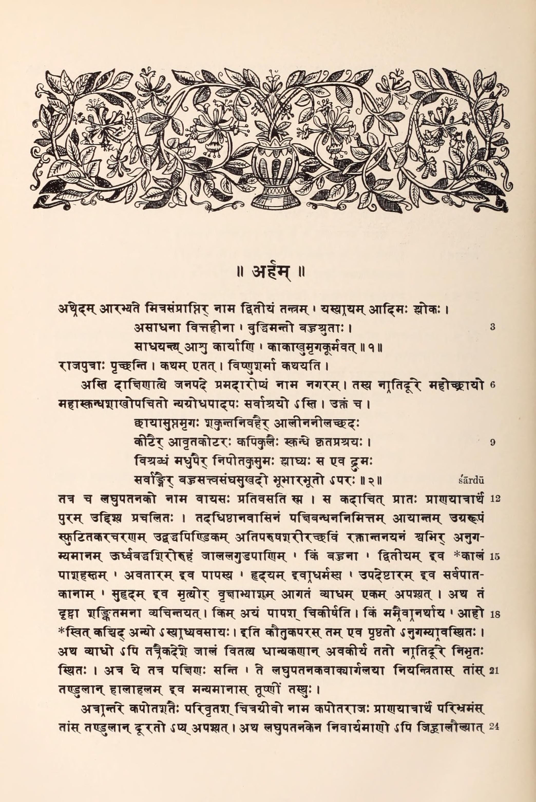
Here, then, begins Book II, called “The Winning of Friends.” The first verse runs:
The mouse and turtle, deer and crow, Had first-rate sense and learning; so, Though money failed and means were few, They quickly put their purpose through.
“How was that?” asked the princes. And Vishnusharman told the following story.
In the southern country is a city called Maidens’ Delight. Not far away was a very lofty banyan tree with mighty trunk and branches, which gave refuge to all creatures. As the verse puts it:
Blest be the tree whose every part Brings joy to many a creature's heart— Its green roof shelters birds in rows, While deer beneath its shadow doze; Its flowers are sipped by tranquil bees, And insects throng its cavities, While monkeys in familiar mirth Embrace its trunk. That tree has worth; But others merely cumber earth.
In the tree lived a crow named Swift. One morning he started toward the city in search of food. But he saw a hunter who lived in the neighborhood and who was already near the tree, approaching to trap birds. He was hideous in person, flat of hand and foot, bare to the calf of the leg, dreadfully ugly of complexion, had bloodshot eyes, was accompanied by dogs, wore his hair in a knot, carried snare and club in his hand—why spin it out? He seemed a second god of destruction, noose in hand; the incarnation of evil; the heart of unrighteousness; the teacher of every sin; the bosom friend of death.
When Swift saw him, he was disturbed in spirit and reflected: “What does he mean to do, the sinner? To hurt me? Or has he some other purpose?” And he clung to the hunter’s heels, being filled with curiosity.
Now the hunter picked a spot, spread a snare, scattered grain, and hid not far away. But the birds who lived there were held in check by Swift’s counsel, regarded the rice-grains as deadly poison, and did not peep.
At this juncture a dove-king named Gay-Neck, with hundreds
of dove retainers, was wandering in search of food, and spied
the rice-grains from afar. In spite of dissuasion from Swift,
[f]
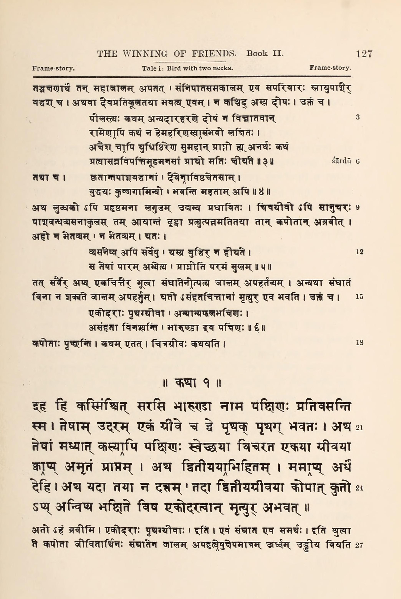 he greedily sought to eat them and alighted in the great
snare. The moment he did so, he and his retainers were caught
in the meshes. Nor should he be blamed. It happened through
hostile fate. As the saying goes:
![[f]](hertel2/n184.jpg){kind=link}
How did Ravan fail to feel That 'tis wrong, a wife to steal? How did Rama fail to see Golden deer could never be? How Yudhishthir fail to know Gambling brings a train of woe? Clutching evil dims the sense, Darkening intelligence.
And again:
When once the mind is gripped by fate, The judgment even of the great, In mortal meshes fettered, wends To unintended, crooked ends.
So the hunter gleefully lifted his club and ran forward. Then Gay-Neck and his retainers, seeing him advancing, were distressed by their disastrous position in the snare. But the king, with much presence of mind, said to the doves: “Have no fear, my friends. For
Provided judgment does not fail,
Whatever the distress,
Men reach the farther shore of woe,
And rest in happiness.
We must all agree in purpose, must fly up in unison, and carry the snare away. This is not possible without united action. For death befalls those of disunited purpose. As the saying goes:
Bharunda birds will teach you why The disunited surely die: For, single-bellied, double-necked, They took a diet incorrect.”
“How was that?” asked the doves. And Gay-Neck told the story of
The Bharunda Birds
By a certain lake in the world lived birds called “bharunda birds.” They had one belly and two necks apiece.
While one of these birds was sauntering about, his first neck found some nectar. Then the second said: “Give me half.” And when the first refused, the second neck angrily picked up poison somewhere and ate it. As they had one belly, they died.
“And that is why I say:
Bharunda birds will teach you why, ....
and the rest of it. Thus union is strength.”
When the doves heard this, being eager to live, they
[f]
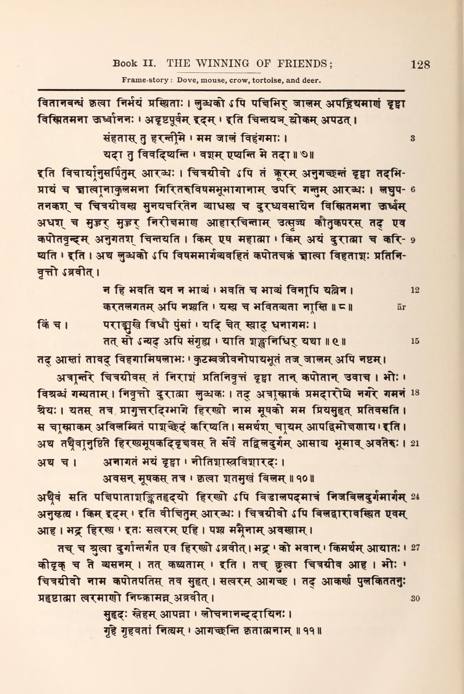 united their efforts to carry the snare away, flew just
an arrow-shot into the air, formed a canopy in the sky, and
proceeded without fear.
![[f]](hertel2/n185.jpg){kind=link}
When the hunter saw the snare carried away by birds, he looked up in amazement, thinking: “This is unprecedented.” And he recited a stanza:
So long as they agree, they may Carry the fatal snare away; But they will quickly disagree, And then those birds belong to me.
With this in mind, he started to pursue. And when Gay-Neck perceived the savage pursuer and recognized his purpose, with judgment unconfused, he started to fly over regions rough with hills and trees.
And Swift in turn, astonished both by Gay-Neck’s prudent conduct and the hunter’s cruel purpose, repeatedly shifted his glance, looking now up, now down, forgot his concern for food, and followed the flock of doves with keenest interest. For he was thinking: “What will this noble soul do next? And what this villain?” At last the hunter, observing that the flock of doves was protected by the roughness of the paths, turned back in disappointment, saying:
“What shall not be, will never be; What shall be, follows painlessly; The thing your fingers grasp, will flit, If fate has predetermined it.
And again:
If fate be hostile, even gains Acquired no man can hold; They go, and take his other wealth, Like hoards of magic gold.
“For, to say nothing of getting birds to eat, I have actually lost the snare which was my means of supporting the family.”
Now when Gay-Neck saw that the hunter had turned back hopeless, he said to the doves: “See! We may travel quietly. The villainous hunter has turned back. This being so, our best plan is to fly to the city Maidens’ Delight. For in its northeastern quarter dwells a mouse named Gold, a dear friend of mine. He will cut our bonds in a hurry. He is quite competent to set us free from our trouble.”
So they all did as he said, for they were eager to find the mouse named Gold. And when they reached the hole which he had converted into a fortress, they alighted. Now previously
The mouse, in social ethics skilled,
Saw danger coming. Then
He built and was residing in
A hundred-gated den.
This being so, Gold was alarmed at the whir of birds’ wings, darted along one path in his fortress-den until just beyond reach of a cat’s paw, and remained on the qui vive, wondering what it meant. But Gay-Neck took his stand at a gate of the den, and said: “My dear Gold, pray hasten to me. See what a plight I am in.”
Thereupon Gold, still within his fortress, said: “My good sir, who are you? What is your errand? And of what nature is your misfortune? Please inform me.” And Gay-Neck answered: “Why, my name is Gay-Neck. I am king of the doves, and a friend of yours. Hasten to me.” At this the mouse felt a quiver in his body and a thrill in his soul. He hastened forth, saying:
If daily to his home The friends who love him come, And coming, bring delight To eyes that kindle bright, A man has found the whole Of life within his soul.
![[f]](hertel2/n186.jpg){kind=link}
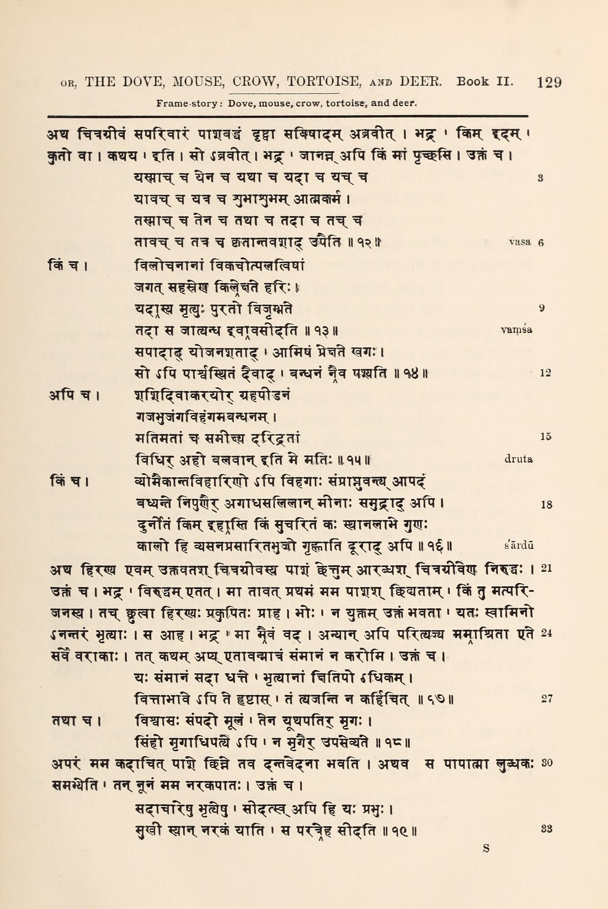
Then, observing that Gay-Neck and his retainers were caught in a snare, he sadly said: “My good friend, what is this, and whence? Tell me.”
“My good friend,” answered Gay-Neck, “why do you ask me? For you know it well. As the proverb says:
Whence, what, by whom, how long, when, where,
And how deserved is good or ill,
Thence, that, by him, so long, then, there,
And so it comes. Fate has its will.
And again:
The peacock seems the world to view
From thousand eyes that mock the hue
Of some bright water-lily;
When fear of death beclouds his mind,
His conduct is of one born blind;
He sinks disheartened, silly.
A hundred leagues and twenty-five
The vulture spies his meat,
But—fate decreeing—fails to see
The snare before his feet.
And again:
Snake, bird, and elephant are caged;
The moon and sun go through eclipse;
The wise are poor: all this I see,
And think how dreadfully fate grips.
And once again:
The birds that in the sky securely soar,
Endure calamities;
While fish are plucked by men from ocean's floor
In far, unsounded seas:
Why speak of virtue here or moral harm?
What stance could help or mar?
Tis Time that stretches forth a fatal arm,
And seizes from afar.”
When Gay-neck had spoken thus, Gold began to cut his bonds, but Gay-Neck checked him, saying: “My good friend, this is wrong. Please do not cut my bonds first, but my followers’.” Now Gold grew angry at this and said: “Come now! You are mistaken. For servants follow the master.” “No, no, my good friend,” said Gay-Neck. “All these poor creatures left others to take service with me. Shall I fail to show them this petty honor? You know the proverb:
The king who offers honor to His followers beyond their due, Has servants glad who never quail, Not even should his money fail.
And again:
Through trust, the root of happy power, A creature wins to kingship's flower; While lions, born to kingship, must As tyrants govern, lacking trust.
“Besides, after cutting my bonds, you might perhaps get a toothache. Or that villainous hunter might return. In that case, I should surely plunge to hell. As the proverb says:
A king who is content to know That loyal servants suffer woe, Will later go to hell, but first Will see his earthly projects burst.”
![[f]](hertel2/n187.jpg){kind=link}
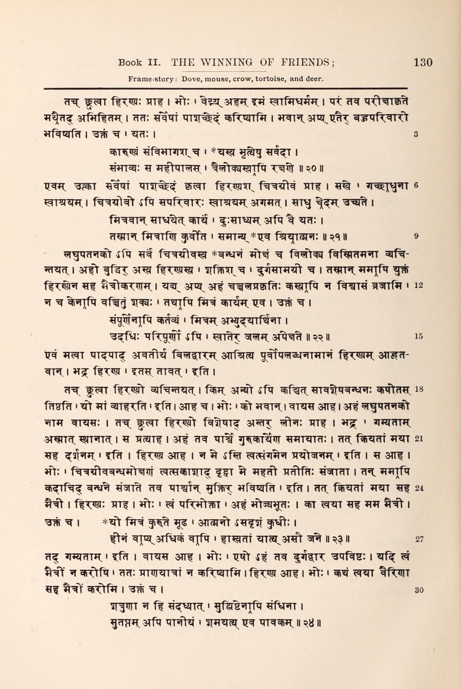
“Yes,” said Gold, “I am well aware of this royal duty. It was to test you that I said what I did. Now I will cut the bonds of all, and you will have in them a numerous retinue. For the proverb says:
The king who mercifully grants Due share in all good circumstance To serving-folk, may fitly rise The triple world to supervise.”
After making these observations, Gold cut the bonds of all, then said to Gay-Neck: “Now, my friend, you are free to go home.” So Gay-Neck went home with his retinue. Yes, there is wisdom in the saying:
Because a man can gain his ends, Though difficult, with aid of friends, Get friends, and feel those friends to be Integral with prosperity.
Now Swift, who had followed the whole matter of Gay-Neck’s capture and release, was filled with astonishment, and he thought: “What intelligence has this Gold! What capacity! What an ingenious fortress! It would therefore be wise for me also to make friends with Gold. Even though I am of a suspicious temperament, confiding in nobody, even if I am too clever to be overreached by anybody, even so I should win a friend. For the proverb says:
Even the self-sufficient should Get friends, and seek a greater good: The ocean fears no diminution, Yet waits Arcturus' contribution.”
After these reflections, he flew down from his tree, approached the gate of the den, and called out—for he had previously heard the name of Gold: “Gold, my dear sir, pray come out.”
And Gold, hearing this, reflected: “Is this perhaps some other dove who, still somewhat entangled, is addressing me?” And he said: “Who are you, sir?” “I am a crow,” was the answer. “My name is Swift.”
On hearing this, Gold hugged a far corner and said: “My very dear sir, please leave this neighborhood.” “But,” replied the crow, “I have come to see you on weighty business. Please grant me an interview.”
“I see no advantage in making your acquaintance,” said Gold. “But,” said the crow, “I feel great confidence in you—the result of seeing how Gay-Neck was relieved of bonds through your exertions. I too may possibly be caught some day and find deliverance through you. Please enter into friendship with me.”
“Sir,” answered Gold, “you eat, and I am food. How can I feel friendship for you? You have heard the saying:
The dull think inequalities
In strength no fatal blocks
To friendship. True—but they are dull,
And public laughingstocks.
Please begone.”
“Look!” said the crow. “Here I perch at the gate of your den. If you do not make friends with me, I shall starve to death.” “But,” said Gold, “how can I make friends with you, with an enemy? For the proverb says:
Make no truce, however snug,
With foemen dire:
Water, even boiling hot,
Will quench a fire.”
![[f]](hertel2/n188.jpg){kind=link}
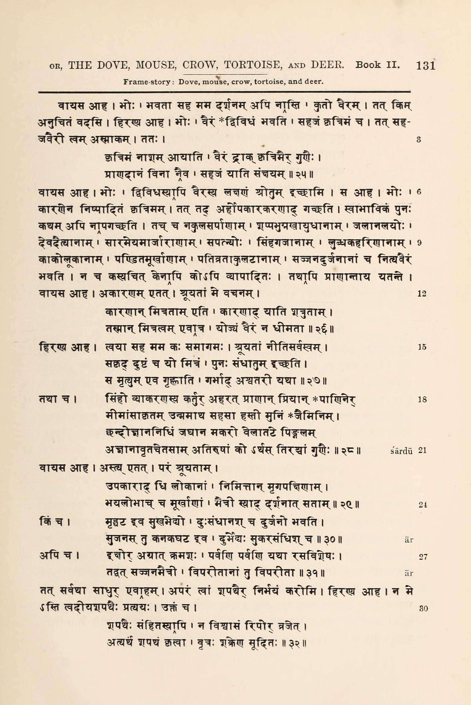
“Why,” said the crow, “you do not even know me by sight. Why should there be strife? Why say a thing so little to the purpose?”
“Sir,” said Gold, “strife is of two kinds, natural and incidental. Now you are in natural strife with me. And the saying goes:
By incidental means one ends
An incidental strife,
And quickly. Nature's kind endures
Until the loss of life.”
“Sir,” said the crow, “I should like to learn the characteristic quality of each kind.” “Well,” said the mouse, “incidental strife springs from a specific cause, and can therefore be removed by rendering an appropriate service. But strife rooted in nature never disappears. Thus there is enduring strife between mungoose and snake—herbivorous creatures and those armed with claws—water and fire—gods and devils—dogs and cats—rival wives—lions and elephants—hunter and deer—crow and owl—scholar and numskull—wife and harlot—saint and sinner. In these cases, nobody belonging to anybody has been killed by anybody, yet they fight to the death.”
“But this is senseless,” said the crow. “Listen to me.
For cause a man becomes a friend;
For cause grows hostile. So
The prudent make a friend of him,
And never make a foe.”
“But,” said Gold, “what commerce can there be between you and me? Listen to the kernel of social ethics:
Whoever trusts a faithless friend
And twice in him believes,
Lays hold on death as certainly
As when a mule conceives.
And again:
A lion took the life of Panini,
Grammar's most famous name;
A tusker madly crushed sage Jaimini
Of metaphysic fame;
And Pingal, metric's boast, was slaughtered by
A seaside crocodile—
What sense for scholarly attainments high
Have beasts besotted, vile?”
“True enough,” said the crow. “But listen to this:
The beasts and birds as friends are won For cause; plain folks, for service done; And silly souls, for greed or fright— But good men are your friends at sight.
And again:
Like pots of clay, the wicked friend Is quick to smash and hard to mend: Like pots of gold the righteous flash, As quick to mend, as hard to smash.
And yet again:
Each segment of a sugar-cane
Beyond the tip, is sweeter;
The friendship of the good is so—
The other kind grows bitter.
Now I assure you that I am upright. Besides, I will reassure you by taking oaths.”
But Gold replied: “I have no confidence in your oaths. There is a saying:
Though a foe be bound by oaths,
Trust him none the more:
Indra struck the demon down,
Spite of oaths galore.
[f]![[f]](hertel2/n189.jpg){kind=link}
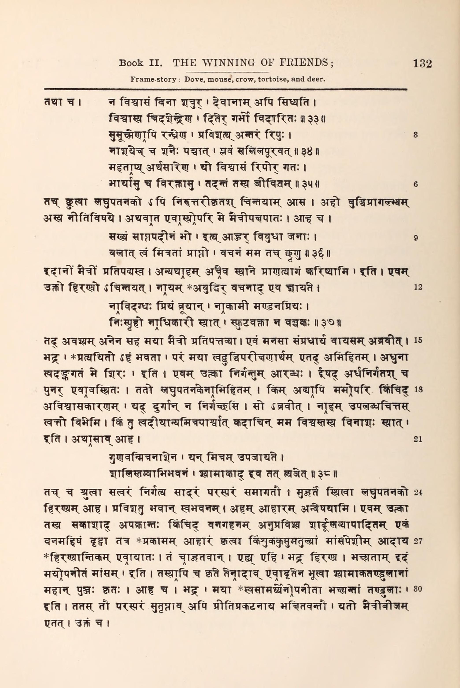
And again:
Even gods must try to lull
Foes with measures mild:
Indra, soothing Diti first,
Smote her unborn child.
Through a narrow crevice slip
Enemies who gloat,
Bringing slow destruction, like
Water in a boat.
If, relying on their means,
Men confide in foes,
Or in wives whose love is lost,
Life abruptly goes.”
To this Swift found no rejoinder, and he thought: “What an eminent intelligence he has in the field of social ethics! Yet for that very reason I crave his friendship.” And he said:
“True friendship, sir, is an affair Of seven words, the wise declare; I've forced you, then, to be a friend— So hear my pleading to the end.
Now grant me your friendship. If you refuse, I shall starve where I stand.”
And Gold reflected: “He is not unintelligent. His speech proves it.
None lacking shrewdness flatter well; None but a lover plays the swell; No saints are found in judgment seats; No clear, straightforward speaker cheats.
So I must certainly grant him my friendship.”
Having made up his mind to this, he said to the crow: “My dear sir, you have won my confidence. But it was necessary first to test your intelligence. Now I lay my head in your lap.” With this he started to come forth, but when scarcely halfway out, he stopped again. And Swift said: “Do you cherish even yet some reason for mistrusting me? I see you do not leave your fortress.”
“I have no fear of you,” said Gold, “for I have examined your mind. But if I gave my confidence, I might perhaps meet death through other friends of yours.” Then the crow spoke:
Friends purchased at the price of death
To other friends and true,
One should avoid, like worthless corn
Where finest rice-plants grew.
Hearing this, Gold hastened forth, and there was a civil greeting on both sides. After a moment Swift said to Gold: “I will not keep you longer outdoors. I am in search of food.” With this he left his friend and flew into thick jungle where he found a wild buffalo that a tiger had killed. Of this he ate his fill, then returned to Gold, carrying a lump of meat red as a dhak-blossom. And he cried: “Come out, my dear Gold! Come out! Enjoy this meat that I have brought.”
Now Gold, with sedulous forethought, had constructed a great heap of corn and rice for his friend’s use. And he said: “My dear friend, pray enjoy this rice which I have provided to the best of my ability.” So each was highly pleased with the other, and they ate in order to manifest kindly feeling. This, indeed, is the seed of friendship. As the verse puts it:
[f]
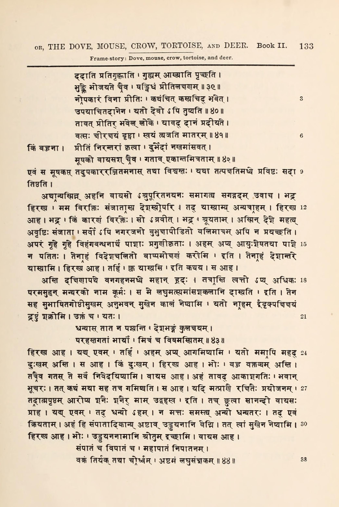Six things are done by friends:
To take, and give again;
To listen, and to talk;
To dine, to entertain.
No friendship ever comes
Without some kindly deed:
The very gods respond
To gifts they have decreed.
As soon as presents cease,
So soon does friendship die:
The calf deserts the cow
Whose udder has gone dry.
![[f]](hertel2/n190.jpg){kind=link}
So, to make a long story short:
The mouse and crow became
Such friends as never fail,
Enduring, hard to split
As flesh and finger nail.
Indeed, the mouse was so captivated by the crow’s attentions that he grew confident to the point of feeling quite at home between his wings.
Now one day the crow appeared with tears filling his eyes, and sobs choked him as he said: “My very dear Gold, I have grown dissatisfied with this country. I intend to travel.” “My dear friend,” said Gold, “what cause have you for discontent?”
“Listen, my friend,” said the crow. “There has been a dreadful drought in this country, so that all the city people, driven by famine, not only cease to give the birds a few mere crumbs, but actually set bird-traps in every house. To be sure, I have not been caught, for further life is appointed me. Yet this is why I shed tears—for I think of foreign travel. This is why I plan to visit another land.” “Then tell me where you plan to go,” said Gold. And Swift replied:
“In the far south is a great lake in the heart of the jungle. There lives a turtle named Slow, a bosom friend of mine, dearer even than you are. He will give me bits offish, a digestible diet. In his society I shall be happy, enjoying the delight of conversation spiced with wit. Besides, I cannot behold such slaughter of birds. For the proverb says:
Blest are they who do not see Death upon the family, Friend in trouble, stolen wife, Ruin of the nation's life.”
“Considering the circumstances,” said Gold, “I will accompany you. I, too, have a great sorrow.” “Of what nature?” asked Swift. “Oh,” said Gold, “it is a long story. When we get there, I will tell you in detail.”
“But,” said the crow, “I travel in the air, you on the ground. How will you accompany me?” And Gold answered: “If you feel concern for the preservation of my life, mount me on your back and carry me very gently.”
At this the crow was delighted and said: “If that is possible, then I am blest indeed. There is none more blest than I. Let it be done. For I know the eight flights, Full-Flight and the rest. Thus I shall carry you in comfort.”
“My friend,” said Gold, “I should like to know the flights by name.” And the crow recited:
Full-Flight, Part-Flight, and the Rise, Great-Flight, and the Curve likewise, Horizontal, Downward-Flight; Number eight is called the Light.
![[f]](hertel2/n191.jpg){kind=link}
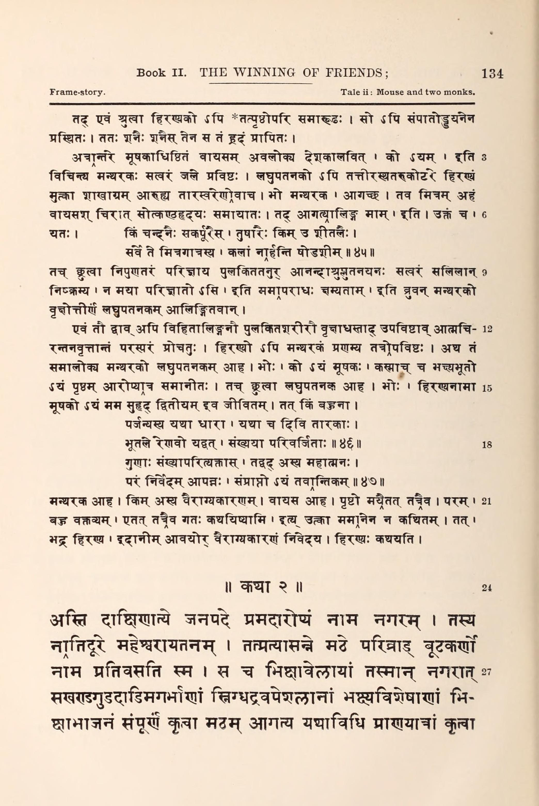
After listening to this, Gold mounted the crow, who set off sit Full-Flight. And very gently he brought his friend to the lake.
Thereupon Slow saw a mouse riding a crow, and wondering who he might be, plopped into the water—for he was a judge of occasions. And Swift, after depositing Gold in a hole in a tree on the bank, perched on the tip of a twig and called in a piercing tone: “Friend Slow! Come here! I am your crow friend. After long absence I have come, my heart filled with longing. Come, embrace me. For the saying runs:
Bring sandalwood or camphor? No! Nor even flakes of cooling snow; All are not worth the sixteenth part Of rest upon a friendly heart.”
When he heard this, Slow made a narrow inspection, then, with a quiver of delight and with eyes swimming in joyful tears, he hurriedly scrambled from the water, saying: “I did not know you. I am much to blame. Forgive me.” And when Swift flew down from the tree, he embraced him.
So the two, after exchanging embraces, thrilled with delight, and sitting beneath the tree told each other their adventures during the long separation. Gold also, with a bow to Slow, sat down there. And Slow, spying him, said to Swift: “Tell me, who is this mouse? And why did you mount him, your natural food, on your back and bring him hither?”
And Swift replied: “Ah, he is a mouse named Gold, a friend of mine, almost my second life. To make a short story of it:
His virtues, like the streams of rain
Or stars that dot the sky
Or like the grains of dust on earth
All numbering defy;
Yes, mathematics fails to count
His lofty virtues through;
Yet he, in deep dejection sunk,
Has come to visit you.”
“And what,” said Slow, “is the cause of his gloom?” “That,” said the crow, “I asked him yonder. But he put me off, saying: ‘It is a long story. I will tell you when we get there.’ Now, my very dear Gold, pray tell us both the cause of your gloom.”
And Gold told the story of
Gold’s Gloom
In the southern country is a city called Maidens’ Delight,
and in the neighborhood a shrine to Shiva. In a cell near by
lived a hermit named Crop-Ear. During his begging hour he
would fill his alms-bowl with dainties from the city,
[f]
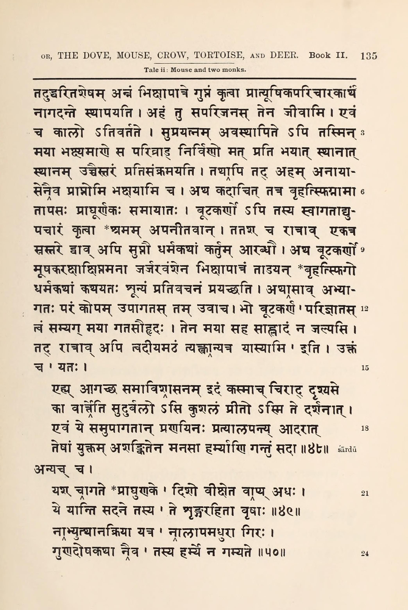 eatables jellified, melting in the mouth, toothsome,
flavored with sugar, treacle, and pomegranate. Then,
returning to his cell, he satisfied himself according to the
ordinance, hid what food was left in the alms-bowl, and hung
it on a peg, keeping it for the servants’ breakfast. On this
food I subsisted with my companions. And so the time
passed.
![[f]](hertel2/n192.jpg){kind=link}
Since I nibbled his food, however carefully he hid it, the hermit was disgusted, and in fear of me he moved it from place to place, always hanging it higher. Even so I got at it easily enough and ate it.
Now one day a guest arrived, a holy man named Wide-Bottom. And Crop-Ear welcomed him, paid him due respect, and relieved his fatigue. At night they lay on the same couch and started to relate pious tales. But Crop-Ear’s thoughts were so preoccupied with mice that he kept striking the alms-bowl with a frazzled bamboo and returned an absent-minded answer to Wide-Bottom as he told a pious tale.
Then the guest grew extremely angry and said: “Come, Crop-Ear! I perceive that your friendship is dead. For you do not talk with me whole-heartedly. So, night though it be, I shall leave your cell and go elsewhere. For there is a saying:
‘Come! Enter! News from town? A chair! You look run down! Welcome! Why have you slighted Our home so long? Dee-lighted!’ Such kindly words as these May set the mind at ease, And friends be glad to go Where they are greeted so.
And again:
Wherever hosts look vaguely round Or fix their glances on the ground, The guests who visit such a place Are hornless, yet of bovine race. You should not visit any home From which no gentle greetings come, Which fails in eager promptitude, With gossip touching bad and good.
![[f]](hertel2/n193.jpg){kind=link}
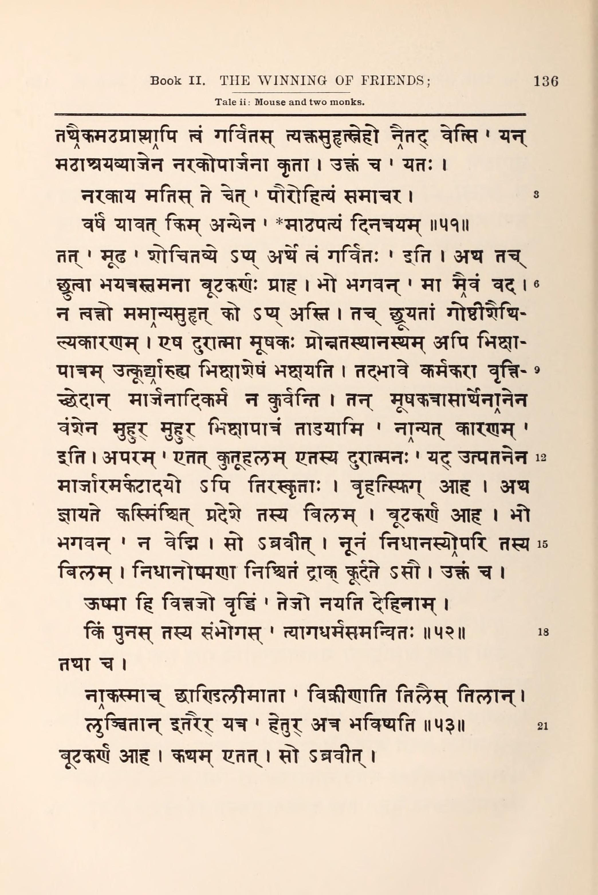
“But this you do not understand, having forgotten friendship through pride in the ownership of one mere cell. So that you seem to dwell here, but in reality you have earned a place in hell. For the proverb says:
A certain course for hell to steer, Become a chaplain for a year; Or try more expeditious ways— Become an abbot for three days.
Poor fool! You take pride in what should cause contrition.”
When he heard this, Crop-Ear was terrified and said: “Do not speak thus, holy sir. There is no friend nearer my heart than you. Pray hear the reason of my inattention. There is a villainous mouse that jumps and climbs to my alms-bowl, however high I hang it, and he eats my leavings. Thus the servants get no recompense, and refuse to tidy up. So to frighten the mouse, I strike the alms-bowl repeatedly with my bamboo. This is the whole story. But I should add that the villain has such cleverness in jumping as to put cats, monkeys, and other creatures to the blush.”
Then Wide-Bottom said: “But have you found the mouse-hole anywhere?” “Holy sir,” said Crop-Ear, “I have not.” “Surely,” said the other, “his hole is over his hoard. Beyond question, the fragrance from his hoard makes him spry. For
The smell of wealth is quite enough To wake a creature's sterner stuff; And wealth's enjoyment, even more, With virtuous giving from his store.
And again:
'Tis certain Mother Shandilee If bargaining in sesame— Her hulled grains for the unhulled kind— Has some good reason in her mind.”
“How was that?” asked Crop-Ear. And Wide-Bottom told the story of
Mother Shandilee’s Bargain
![[f]](hertel2/n194.jpg){kind=link}
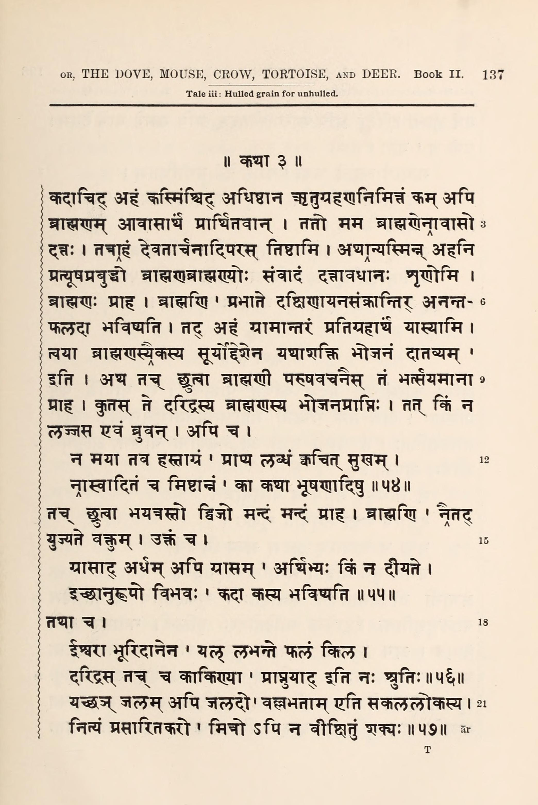
At one time I asked a certain Brahman in a certain town for shelter during the rainy season, and this he gave me. So there I lived, occupied with pious duties.
One day I woke betimes, and listening to a conversation between my host and his wife, I heard the Brahman say: “My dear, tomorrow will be the winter solstice, an extremely profitable season. So I will go to another village in search of donations. And you, in honor of the sun, should give some Brahman food to the extent of your ability.”
But his wife snapped at him harshly, saying: “Who would give food to a poor Brahman like you? Are you not ashamed to talk like that? And besides:
Since first I put my hand in yours,
I haven't had a thing:
I've never tasted stylish food;
Don't mention gem or ring.”
At this the Brahman was terrified and he stammered: “My dear, my dear, you should not say such things. You have heard the saying:
You have a mouthful only? Give
A half to feed the needy:
Will any ever own the wealth
For which his soul is greedy?
And again:
The poor man can but give a mite;
Yet his reward is such—
The Scriptures tell us—as is his,
From riches giving much.
The cloud gives only water, yet
The whole world treats him as a pet:
But none can bear the sun, who stands
With rays that look like outstretched hands.
![[f]](hertel2/n195.jpg){kind=link}
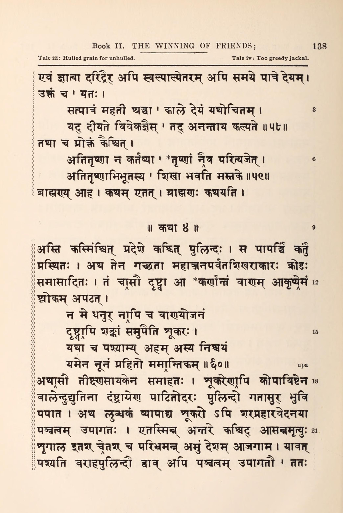
“Bearing this in mind, even the poor should give to the right person at the right time—though the gift seems beneath contempt. For
Great faith, a gift appropriate,
Fit time, a fit recipient,
An understanding heart—and gifts
Are blest beyond all measurement.
And some quote this:
Indulge in no excessive greed (A little helps in time of need) But one, by greed excessive led, Perceived a topknot on his head.”
“How was that?” asked the wife. And the Brahman told the story of
Self-Defeating Forethought
There was once a hillman in a certain place who set out to increase his sins by hunting. As he walked along, he met a boar that resembled the top of Sooty Mountain. Straightway he drew an arrow as far as his ear, and recited this verse:
The fitted shaft and bow-string's tension He sees, and shows no apprehension; The psychological conclusion Is: Death has prompted this intrusion.
Then with a sharp arrow he shot the boar, who in turn angrily tore the hillman’s stomach with a pointed fang that shone like the crescent moon, so that the man fell dead. The boar also, after killing the hunter, died in torment from the arrow-wound.
At this point a starving jackal reached the spot in his
aimless wanderings. When he spied a boar and a hunter, both
[f]
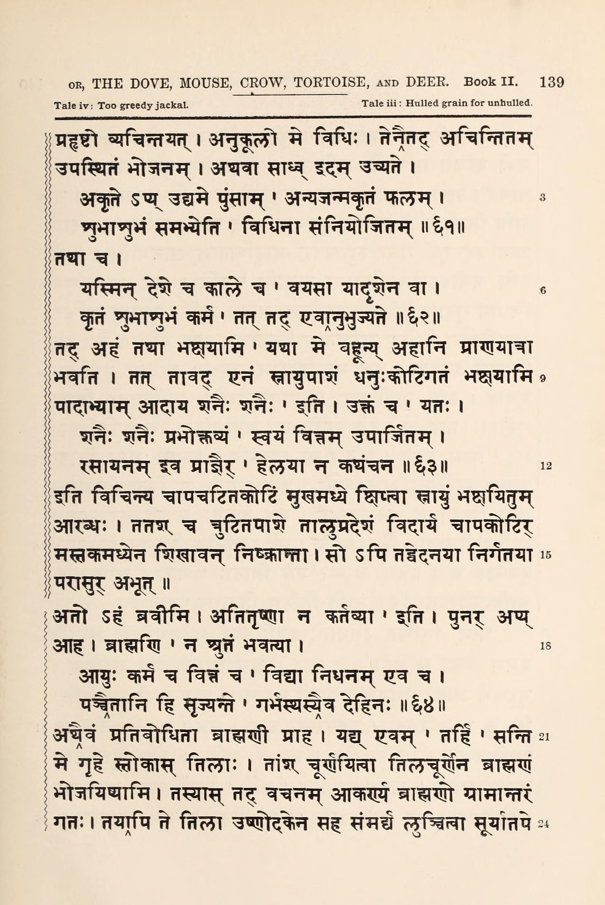 dead, he gleefully thought: “Fate is kind to me,
providing this unlooked-for store of food. There is wisdom in
the verse:
![[f]](hertel2/n196.jpg){kind=link}
The fruit of actions good or bad
In each preceding state,
Without a further effort, comes
Upon us, brought by fate.
And again:
Each deed from every time and place
And age, as consequence
Brings good or evil in exact
And fitting recompense.
“Now I will eat in such a way as to have sustenance for many days. I will begin with the sinew wrapped round the bow-tip. I will hold it in my paws and eat very slowly. For the saying goes:
Consumption of a treasure earned
Should very slowly follow,
As wise men sip elixir down,
Not bolt it at a swallow.”
After these reflections, he took into his mouth the sinew with its end hanging from the bow. And when the gut snapped, the bow-tip pierced the roof of his mouth and came out like a topknot. And the jackal perished from the pain of it.
“And that is why I say:
Indulge in no excessive greed,
and the rest of it.”
Then the Brahman continued: “My dear, did you never hear this?
These five are fixed for every man
Before he leaves the womb:
His length of days, his fate, his wealth,
His learning, and his tomb.”
After this preachment, the wife said: “Well, I believe I have a bit of sesame grain in the house. I will grind it into flour and feed a Brahman.” And her husband, having received her promise, went off to another village.
![[f]](hertel2/n197.jpg){kind=link}
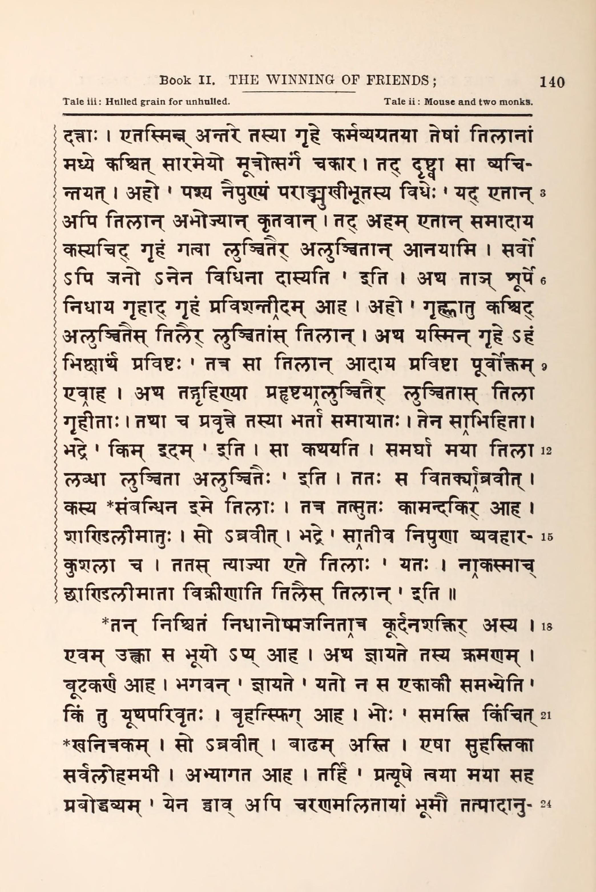
Then the wife softened the sesame grains in hot water, hulled them, placed them in the hot sun, and returned to her chores in the house. In this state of affairs a dog made water in the dish of grain, and she thought when she saw it: “Dear me! See how shrewd fate is, when it has turned against you. Even these poor sesame grains it has made unfit to eat. Well, I will take them to some neighbor’s house, and make an exchange, unhulled for hulled. For anybody will bargain on those terms.” So she put her grain in a basket and went from house to house, saying: “Who cares to exchange sesame unhulled for sesame hulled?”
Now she happened to enter with her grain a house which I had entered to beg alms, and she made her offer there. The housewife was delighted and took the hulled grain in exchange for unhulled. Later, her husband came home and asked: “My dear, what does this mean?” And she told him: “I made a bargain, hulled sesame for unhulled.”
Over this he pondered, then said: “To whom did this grain belong?” And his son Kamandaki told him: “To Mother Shandilee.” Then he said: “My dear wife, she is mighty shrewd at a bargain. You had better throw this sesame away.
'Tis certain Mother Shandilee, If bargaining in sesame— Her hulled grains for the unhulled kind— Has some good reason in her mind.”
“So,” said Wide-Bottom, “he surely derives this vigor in jumping from the smell of his hoard.” And he continued: “Do you know his manner of attack?” “Yes, holy sir, I do,” answered Crop-Ear. “He comes not alone, but with a school of mice.”
“Well now,” said Wide-bottom, “is there any digging tool
about?” “Indeed there is,” said Crop-Ear. “Here is a handy
pickaxe, solid iron.” “In that case,” said the guest, “you
and I must wake early, so as to follow their tracks together,
[f]
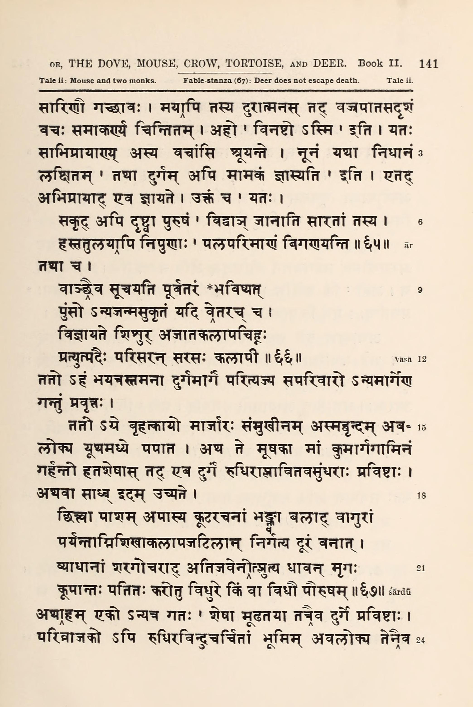 while the footprints still dirty the floor.”
![[f]](hertel2/n198.jpg){kind=link}
Now when I heard the villain’s speech fall like a thunderbolt, I thought: “Ah, this spells ruin for me. For his words imply something more. Just as he has marked my hoard, so he will surely discover my fortress, also. Of this his implied meaning convinces me. For the proverb says:
Shrewd characters at sight Can estimate aright Their man, as some are deft To gauge an ounce by heft.
And again:
The budding fancy first betrays
The character that strives
For birth as recompense of good
Or ill in former lives:
No marking tail has grown, yet when
You see the beggar pick
His mincing steps about the pond,
You cry: ‘A peacock chick!’”
So I was terrified, deserted the beaten track to my fortress, and with my followers started on another track.
Then a prodigious cat met us, and seeing the whole pack before him, pounced into our midst. And the mice who survived the slaughter scolded me for picking a bad trail, and sought shelter in the old fortress, drenching the floor with blood. Yes, there is wisdom in the old story:
A deer there was that burst his bonds;
He flung the trap aside;
He violently broke apart
The hobbling snare that tied;
From woods uncouth with tufted flames
Around him bristling, fled;
The hunters' arrows left behind;
To seeming safety sped;
Into a well at last he tumbles:
On hostile fate all effort stumbles.
Then I departed, alone. The others—poor dolts! plunged
into the old fortress. Thereupon the holy man, perceiving
[f]
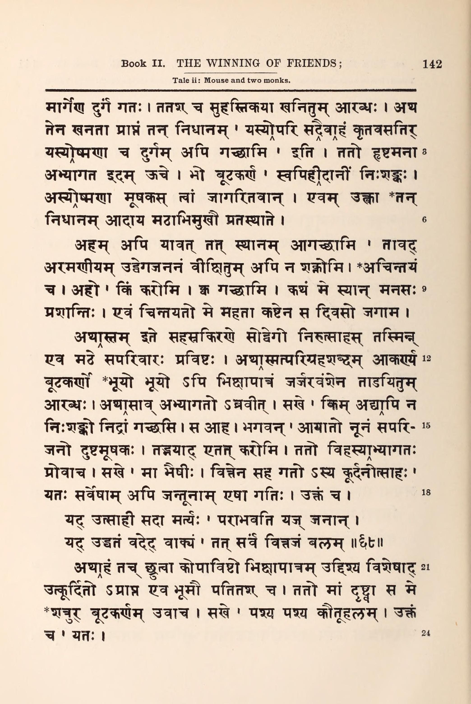 that the floor was smeared with drops of blood,
followed the trail to the fortress, and began to ply the
pickaxe. As he dug, he came upon the hoard over which I had
lived so long, and the smell of which used to guide me back
to the fortress.
![[f]](hertel2/n199.jpg){kind=link}
Then Wide-Bottom was filled with glee and said: “Now, Crop-ear, sleep in peace. It was the smell of this that enabled the mouse to wake you.” So they took the hoard and turned to the cell.
Now when I returned to the spot, I could not bear to look at the sad, disturbing sight. And I reflected: “Ah, what shall I do? Where shall I go? How may I win peace of mind?” In such reflections the day dragged drearily away.
Still, when the sun had laid his thousand beams to rest, I went with my companions to the same cell, though I was troubled and lacking in vigor. And when Crop-Ear heard the patter of our pack, time and again he started to strike the alms-bowl with his frazzled bamboo.
Then his guest said: “My friend, why not go peacefully to sleep at last?” “Holy sir,” he replied, “I am sure that villainous mouse has come with his followers. I do this from fear of him.”
But Wide-Bottom laughed and said: “Have no fear, my friend. His jumping energy is gone with his property. This rule applies to all creatures without exception. As the saying goes:
The man has constant vigor? Dares
On others' backs to mount?
Speaks in a self-sufficient tone?
He has a bank account.”
This angered me so that I made a desperate jump for the alms-bowl, but missed and fell to the floor. And my enemy saw me and said to Crop-Ear: “Look, my friend! It is quite wonderful. You could put it into poetry:
[f]
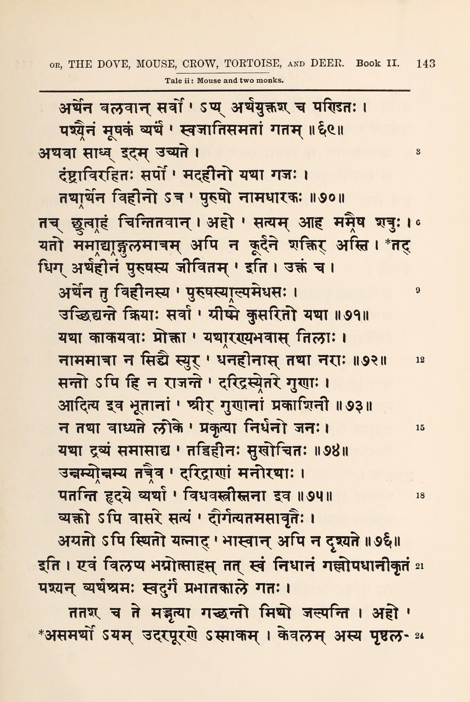The wealthy men are men of force;
And they are scholars all, of course:
The mouse who lost his wealthy store,
Is now a mouse and nothing more.
![[f]](hertel2/n200.jpg){kind=link}
And there is point in this:
A fangless snake; an elephant Without an ichor-store; A man who lacks a cash account— Are names and nothing more.”
When I heard this, I reflected: “Alas! It is true, though it is my enemy who says it. For today I have not the power to jump a mere finger’s breadth. A curse upon a fellow’s life without money! As the saying goes:
After money has departed,
If the wit is frail,
Then, like rills in summer weather,
Undertakings fail.
Forest sesame, crow-barley,
Men who have no cash,
Owning names but lacking substance,
Are accounted trash.
Beggars have, no doubt, their virtues,
Yet they do not flash:
As the world has need of sunlight,
Virtues ask for cash.
Beggars-born less keenly suffer
Than the men who crash
From a life of comfort to a
Deficit of cash.
Like the flabby breasts of widows,
Hopes and wishes rash
Helpless fall upon the bosom,
When there is no cash.
The sun that stuns the eyes that shun,
In vain he strains to see:
The light so bright is wrapped in night
By veils of poverty.”
With this broken-spirited lamentation I saw my own hoard of wealth converted into a pillow for my enemy, and at dawn I crept into my fortress—a failure.
Then my attendants retired and gossiped together. “Look
here!” said they, “the fellow has no power to fill our
[f]
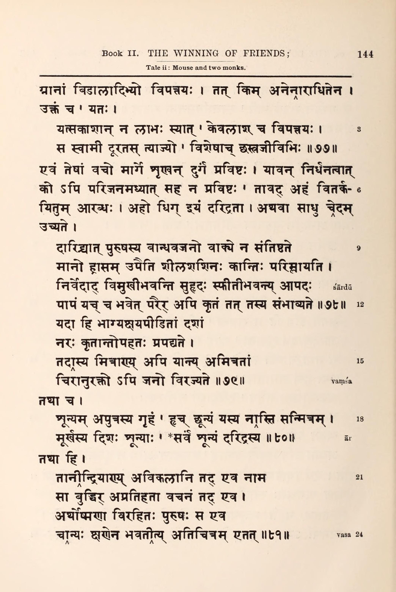 bellies. Those who ride his back get nothing but
buffets—from cats, for example. Why pay him reverence? For
the proverb says:
![[f]](hertel2/n201.jpg){kind=link}
A king from whom no bounties come,
But only buffets fall,
Had better be avoided, and
By soldiers first of all.”
Such remarks I heard on the trail. And since, when I returned to the fortress, not one of my followers accompanied me (for I was penniless) I began to ponder deeply.
“A curse, a curse on a life of poverty! There is sound sense in the verse:
Even relatives are sure
Scornfully to treat the poor;
Pride is docked, and virtue's moon
Loses luster, waning soon;
Friends that were, disgusted fly;
Sorrows breed and multiply;
Comes the imputation then
Of the sins of other men.
When man is crushed by poverty
And stricken down by fate,
His best of friends become his foes,
And tried affection, hate.
And again:
Empty is the childless home;
Hearts that lack a friendship sure;
Wide horizons, to the fool;
All is empty to the poor.
And once again:
His passions are entire; his name, Keen wit, and speech are just the same; The man's the same. No! See him change! Cash fails. The life is out! Ah, strange!
![[f]](hertel2/n202.jpg){kind=link}
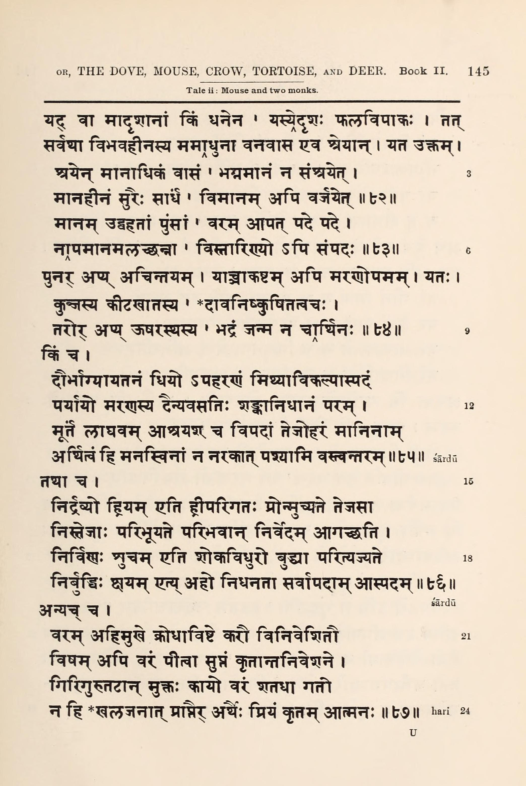
“Yet what have folk like me to do with money? Folk whose final fate is such as this? Positively my best course, now that property is gone, is to withdraw to the forest. As the proverb says:
Pride builds a proper house;
Never be humble:
Spurn cars of heaven, where
Pride takes a tumble.
Failure may dog the step;
Pride stands erect,
Stoops not to widest wealth
Tainted, abject.”
And I continued my reflections: “Yes, the curse of beggary is dreadful as death. For
Gutted by the forest fire,
Stands in sterile soil a tree,
Gnarled, and riddled by the worms—
Better that than beggar be.
And as for beggary:
It is the shrine of wretchedness,
The dwelling-place of tears,
The thief of mind, the soil of doubts,
The treasury of fears,
Concreted meanness, home of woe,
And haughty honor's knell,
A form of death—to self-esteem
No different from hell.
And again:
A beggar is a man of shame, Who bids farewell to honor's name; From this, humiliations grow, Then melancholy's gloomy woe; But gloom with sadness dims the sense, And sad men lack intelligence; Now death is folly's certain fruit— Thus, money's lack is evil's root.
And once again:
Thrust your hands between the jaws
Of an angry snake;
Slumber in the house of Death;
Poisoned liquor take;
Dash yourself to pieces down
Himalaya's side:
Do not feast on riches wrung
From a villain's pride.
[f]![[f]](hertel2/n203.jpg){kind=link}
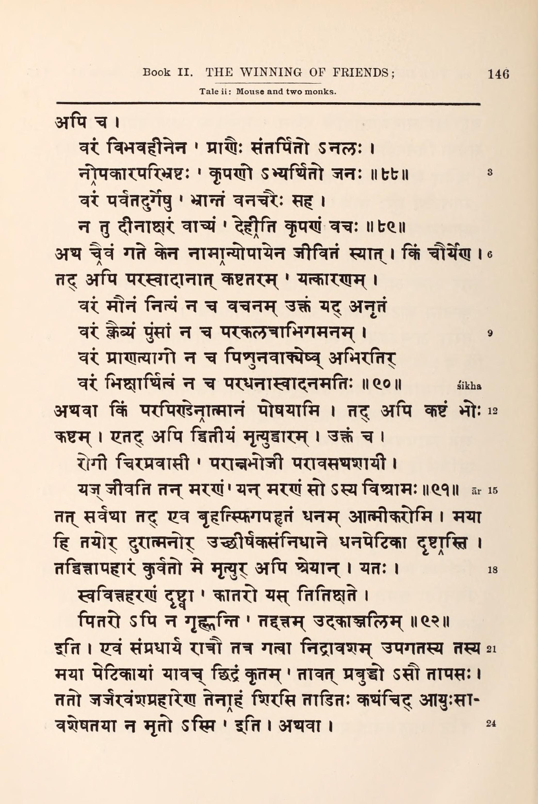
To sum it up:
Feed your body to the flames,
Friend, if you are needy;
Do not cringe to beg a dole
From the selfish-greedy.
Better roam in forest wilds
With the beasts of prey
Than, by whimpering for gifts,
Baseness to betray.
“This being the case, what possible course shall I adopt to keep alive? How about robbery? That too is damnable, for it means appropriating what belongs to others. As the verse puts it:
Better let your tongue be tied Than to know that you have lied; Better to be impotent Than adulterously bent; Better die than take delight In the petty pricks of spite; Better beg as monk than feel That you live by what you steal.
Well, then, shall I live on charity? That, too, is damnable, my friends, damnable. That too is a second gate of death. As the saying goes:
Parasite, or exiled scamp, Invalid, or homeless tramp— Life is death for these. The best Would be death. For death is rest.
“Then I must at any cost recover the very treasure that Wide-bottom has stolen. For I saw my money-bag converted into a pillow for those two villains. I must regain my property, and if I die in the attempt, it will be better than this. For
If cowards who see themselves despoiled
Too tamely feel the sting,
Their fathers in the world beyond
Will spurn their offering.”
After reaching this conclusion, I went there at night and
gnawed a hole in the bag after he had gone to sleep.
Thereupon that dreadful holy man awoke and struck me on the
head with the frazzled bamboo. Yet somehow I escaped
death—predestination, you see. As the old rhyme puts it:
[f]
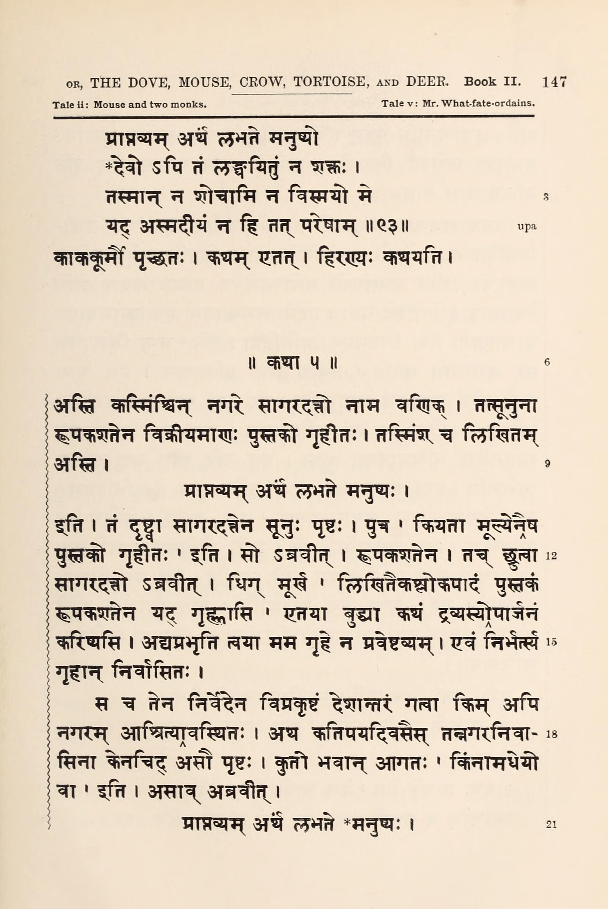
![[f]](hertel2/n204.jpg){kind=link}
What's duly his, a man receives;
This law not even God can break;
My heart is not surprised, nor grieves;
For what is mine, no strangers take.
“How was that?” asked the crow and the turtle. And Gold told the story of
Mister Duly
In a certain city lived a merchant named Ocean. His son picked up a book at a sale for a hundred rupees. In this book was the line:
What's duly his, a man receives.
Now Ocean saw it and asked his son: “My boy, what did you give for this book?” “A hundred rupees,” said the son. “Simpleton!” said Ocean, “if you pay a hundred rupees for a book with one line of poetry written in it, how do you calculate to make money? From this day you are not at home in my house.” After this wigging, he showed him the door. This melancholy rebuff drove the young man to another country far away, where he came to a city and stopped there. After some days a native asked him: “Whence are you, sir? What might your name be?” And he replied:
“What's duly his, a man receives.”
![[f]](hertel2/n205.jpg){kind=link}
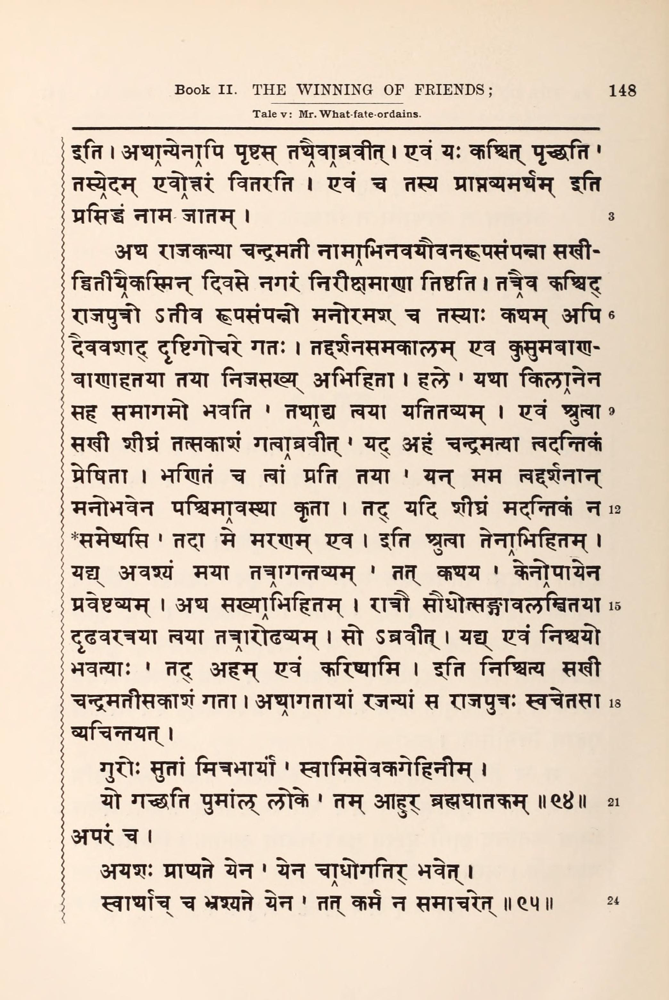
To a second inquirer he gave the same reply. Then on all who questioned him, he bestowed his stereotyped answer. This is how he came by his nickname of Mister Duly.
Now a princess named Moonlight, who was in the first flush of youth and beauty, stood one day with a girl friend, looking out over the city. At that spot a prince, extraordinarily handsome and charming, chanced to come—it was fate’s doing—within her range of vision. The moment she saw him, she was smitten by the arrows of Love, and said to her friend: “Dear girl, you must make an effort to bring us together this very day.”
So the friend went straight to him and said: “Moonlight sent me to you. She sends you this message: ‘The sight of you has reduced me to the last extremity of love. If you do not hasten to me, I shall die, nothing less.’”
On hearing this, he said: “If I cannot avoid the trip, please tell me how to get into the house.” And the friend said: “When night comes, you must climb up a stout strap that will be hanging from an upper story of the palace.” And he replied: “If you have it all settled, I will do my part.” With this understanding the girl returned to Moonlight.
But when night came, the prince thought it over:
“A Brahman-slayer, so they say,
Is he who tries to house
With teacher's child, or wife of friend,
Or royal servant's spouse.
And again:
A deed that brings dishonor,
Whereby a man must fall,
That causes disadvantage,
Don't do it—that is all.”
![[f]](hertel2/n206.jpg){kind=link}
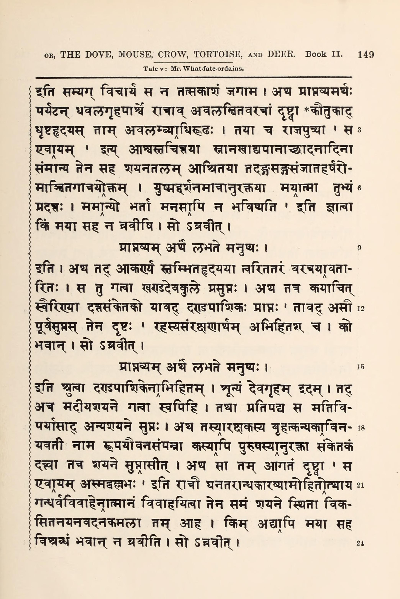
So after full reflection he did not go to her. But Mister Duly was roaming through the night and spied a strap hanging down the wall of a fine stucco house. Out of curiosity mingled with bravado he took hold and climbed.
Now the princess, being perfectly confident that he was the right man, treated him with high consideration, giving him a bath, a meal, a drink, fine garments, and the like. Then she went to bed with him, and her limbs thrilled with joy at touching him. But she said: “I fell in love with you at first sight, and have given you my person. I shall never have another husband, even mentally. Why don’t you realize this and talk to me?” And he replied:
“What's duly his, a man receives.”
When she heard this, her heart stopped beating, and she sent him down the strap in a hurry. So he made for a tumble-down temple and went to sleep. Presently a policeman who had an appointment with a woman of easy virtue arrived there and found him asleep. As the policeman wished to hush the matter up, he said: “Who are you?” and the other answered:
“What's duly his, a man receives.”
When he heard this, the policeman said: “This temple is deserted. Go and sleep in my bed.” And he agreed, but made a blunder, lying down in the wrong bed. In that bed lay the policeman’s daughter, a big girl named Naughty, beautiful and young. She had made a date with a man she loved, and when she saw Mister Duly, she thought: “Here is my sweetheart.” So, her blunder due to the pitchy darkness of the night, she rose, gave herself in marriage by the ceremony used in heaven, then lay with him in bed, her lotus-eyes and lily-face ablossom. But she said: “Even yet you do not talk nicely with me. Why not?” And he replied:
[f]
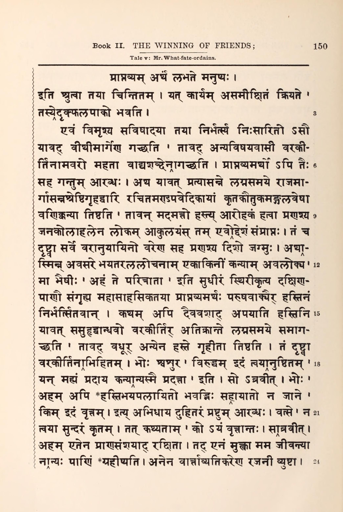“What's duly his, a man receives.”
![[f]](hertel2/n207.jpg){kind=link}
On hearing this, she thought: “This is what one gets for being careless.” So she gave him a sorrowful scolding and sent him packing.
As he walked along a business street, there approached a bridegroom named Fine-Fame. He came from another district and marched with a great whanging of tom-toms. So Mister Duly joined the procession. Since the happy moment was near at hand, the bride, a merchant’s daughter, was standing at the door of her father’s house near the highway. She stood on a raised step under an awning provided for the occasion, and displayed her wedding finery.
At this moment an elephant reached the spot, running amuck. He had killed his driver, had got beyond control, and the crowd was in a hubbub, everyone scared out of his wits. When the bridegroom’s parade caught a glimpse of him, they ran—the bridegroom, too—and started for the horizon.
In this crisis Mister Duly perceived the girl, all alone, her eyes dancing with terror, and with the words: “Don’t worry. I will save you,” manfully reassured her, put his right arm around her, and with enormous sang-froid gave the elephant a cruel scolding. And the elephant—it was fate’s doing—actually went away.
Presently Fine-Fame appeared with friends and relatives, too late for the wedding; for another man was holding his bride’s hand. At the sight of his rival, he said: “Come, father-in-law! This is hardly respectable. You promised your daughter to me, then gave her to another man.” “Sir,” said the father-in-law, “I was frightened by the elephant, and I ran too. I came back with you gentlemen, and do not know what has been going on.”
Then he turned and questioned his daughter: “My darling girl, what you have been doing is scarcely the thing. Tell me what this business means.” And she replied: “This man saved me from deadly peril. So long as I live, no man but him shall hold my hand.”
![[f]](hertel2/n208.jpg){kind=link}
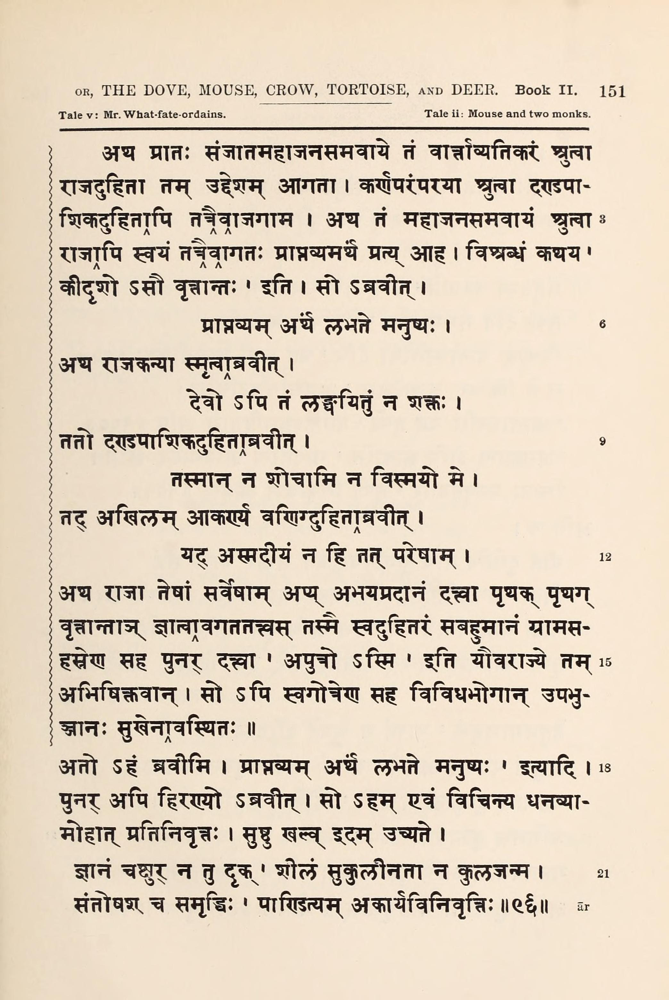
When the story got abroad, dawn had come. And as a great crowd gathered in the early morning, the princess heard the story of events and came to the spot. The policeman’s daughter also, hearing what passed from lip to lip, visited the place. And the king in turn, learning of the gathering of a great crowd, arrived in person, and said to Mister Duly: “Speak without apprehension. What sort of business is this?” And Mister Duly said:
“What's duly his, a man receives.”
Then the princess remembered, and she said:
“This law not even God can break.”
Then the policeman’s daughter said:
“My heart is not surprised, nor grieves.”
And hearing all this, the merchant’s daughter said:
“For what is mine, no strangers take.”
Then the king promised immunity to one and all, arrived at the truth by piecing their narratives together, and ended by respectfully giving Mister Duly his own daughter, together with a thousand villages. Then he bethought himself that he had no son, so he anointed Mister Duly crown prince. And the crown prince, together with his family, lived happily; for means of enjoyment were provided in great variety.
“And that is why I say:
What's duly his, a man receives, ....
and the rest of it.” And Gold continued:
“After these reflections, I recovered from my money-madness. For there is much wisdom in this:
Not rank, but character, is birth;
It is not eyes, but wits, that see;
True learning 'tis, to cease from wrong;
Contentment is prosperity.
[f]![[f]](hertel2/n209.jpg){kind=link}
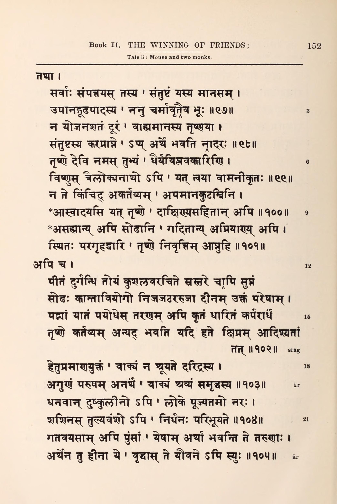
And again:
Yes, all prosperities are his,
Whose heart is filled with mirth:
The feet in leather sandals shod,
Travel a leather earth.
A hundred leagues is naught to him
Whose vehicle is greed:
To clasp the wealth that fingers touch
Contentment has no need.
Since Vishnu, universal lord,
Through thee a dwarf was made,
O manhood's solvent, Greed divine,
To thee be homage paid.
No feat is hard for thee, O Greed,
Dishonor's wedded dame,
Who, for the men of kindest heart,
Preparest draughts of shame.
What man should never bear, I bore;
I spoke and, speaking, lied;
I waited at the stranger's door:
O Greed, be satisfied!
And again:
I've drunk foul water; slept forlorn
On gathered bits of broken thorn;
I've lost my love, I've begged for alms,
Enduring heart- and belly-qualms;
I've crossed the sea; I've walked afar;
I've treasured half a shattered jar:
Of further labors is there need?
Quick, damn you! Give your orders, Greed!
No poor man's evidence is heard,
Though logic link it word to word:
While wealthy babble passes muster
Though crammed with harshness, vice, and bluster.
The wealthy, though of meanest birth,
Are much respected on the earth:
The poor whose lineage is prized
Like clearest moonlight, are despised.
The wealthy are, however old,
Rejuvenated by their gold:
If money has departed, then
The youngest lads are aged men.
[f]
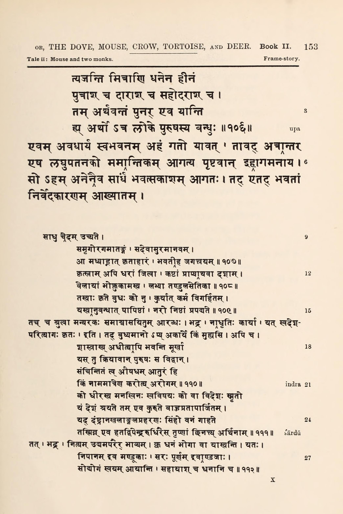Since brother, son, and wife, and friend
Desert when cash is at an end,
Returning when the cash rolls in,
'Tis cash that is our next of kin.
![[f]](hertel2/n210.jpg){kind=link}
“At the moment when, with such thoughts in my mind, I went to my quarters, our friend Swift came to me and suggested a journey hither. So here I am. I have come with him to visit you. Thus I have related to you the cause of my gloom.
“Well, there is this to be said:
The world—gods, elephants, and men,
Deer, devils, snakes—
Before the noonday hour is spent,
Its dinner takes.
When hour and appetite arrive,
There should suffice
For world-wide conqueror or slave
A bowl of rice.
For this, what man of sense would do
Base deeds perverse,
Whose consequences drag him down
From bad to worse?”
When he had listened to this, Slow began to offer consolation. “My dear fellow,” said he, “you must not lose heart at leaving your country. Intelligent as you are, why feel disturbed without occasion? Consider the saying:
The merely learnèd is a fool; The wise man uses action's tool: For no remembered drug can cure The sick by name alone, 'tis sure. To brave and wise what land is strange, Or native? Whatsoever change Befall, he makes the land his own By strength of valiant arm alone: The lion's whim is jungle law By strength of tooth and tail and claw; He slaughters elephants for food, And slakes his servants' thirst with blood.
“Therefore, my dear fellow, we must always be energetic. Where will money feel at home, or pleasures? You know the saying:
As frogs will find a drinking-hole,
Or birds a brimming lake,
So friends and money seek a man
Whose vigor does not break.
[f]![[f]](hertel2/n211.jpg){kind=link}
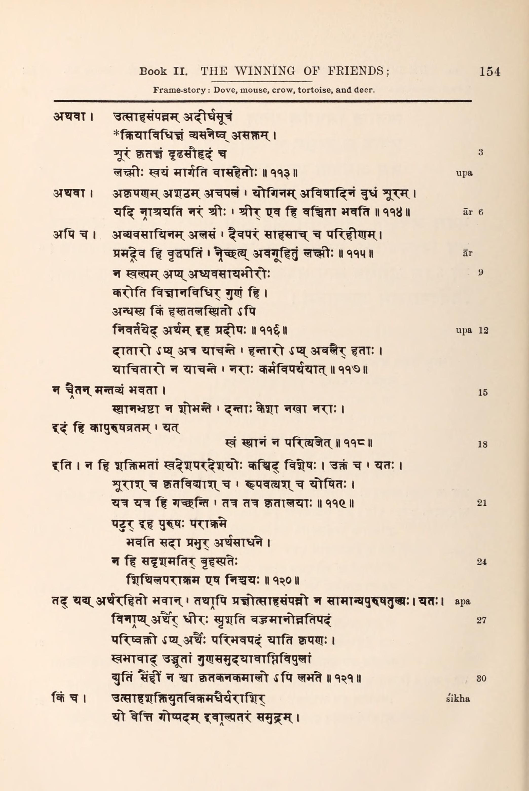
From another point of view:
The goddess Fortune seeks as home
The brave and friendly man,
The grateful, righteous soul who does
Each moment what he can,
Who regulates a sturdy life
Upon an active plan.
Or, put it this way:
The brave, wise, hopeful, and persistent,
From tricks, freaks, meanness equidistant—
If such there be,
And Fortune flee,
The joke on Fortune falls, insistent.
While, on the other hand:
If man be fatalist and slacker,
Irresolute and sang-froid lacker,
Him Fortune—as a bouncing miss
Her aged lover—hates to kiss.
Abysmal learning does not aid
To virtue those who are afraid:
As men with lamps no sooner find
Lost objects, if those men are blind.
The prince becomes a beggar;
By weak are slayers slain;
The beggar ceases begging;
When fate revolves again.
“Nor must you, in view of the aphorism,
Since teeth and nails and men and hair, If out of place, are ugly there
draw the coward’s conclusion:
Let no man leave his native place.
“For to the competent there is no distinction between native and foreign land. You must have heard the saying:
Brave, learnèd, fair,
Where'er they roam,
Without delay
Are quite at home.
The shrewdly valiant on the earth
Will always master money's worth;
Not those of godlike scholarship—
'Tis certain—if they lose their grip.
“Today, no doubt, your purse is light. For all that, you are not in the position of the commonplace fellow, for you have sense and vigor. And the proverb says:
Let sturdy resolution guide, And poor men touch the peak of pride; Let money fold in its embrace The mean, they sink to lowly place: The lion's majesty derives From nature, rich because he strives To crown his feats with nobler feats. What golden-collared dog competes?
And again:
[f]
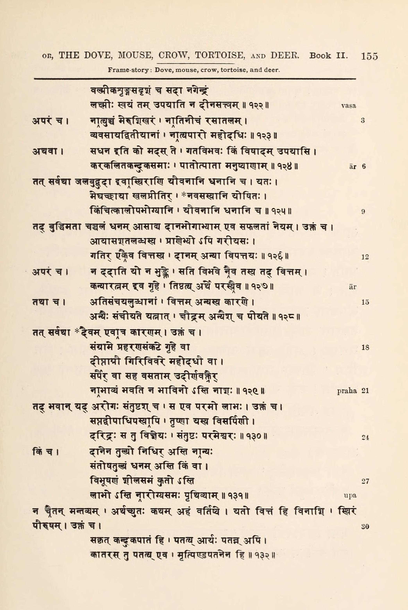Some men compacted of self-rigor
With valor, enterprise, and vigor
Indifferently view the muddle
Of ocean and the petty puddle;
As at some wretched ant-hill, frown
At Himalaya's highest crown:
To these, not those who wait and see,
Comes Fortune, tripping eagerly.
![[f]](hertel2/n212.jpg){kind=link}
And once more:
Mount Meru is not very high,
Hell is not very low,
The sea not shoreless, if a man
Abounding vigor show.
For, after all:
Why, wealthy, puff with pride? Why, poor, in gloom subside? Since, like a stricken ball, Men's fortunes rise and fall.
In any case, remember that youth and wealth are unstable as water-bubbles. As the saying goes:
With shadows of the passing cloud,
New grain, and knavish friends,
With women's love, and youth, and wealth,
Enjoyment quickly ends.
This being so, if an intelligent man catches slippery money, let him make it fruitful, by giving it away or enjoying it. As the proverb tells us:
The coin that cost a hundred toils,
That men are wont to cherish
Beyond their life, will, if it be
Not given to others, perish.
And again:
Bestow, or use your wealth for pleasure; If not, you hoard another's treasure: As in your home, your lovely girl Awaits a stranger—his dear pearl.
And once again:
The miser for another hoards
His bags of needless money:
The bees laboriously pack,
But others taste the honey.
In any event, fate has the last word. As the proverb puts it:
In weapon-bristling battle or at home,
In flaming fire, wild cave, or monstrous sea,
Among thanatophidian fangs elate,
The to-be is, is not the not-to-be.
Now you are healthy and enjoy peace of mind. This is the supreme possession. As the saying goes:
The lord of seven continents,
Beset by crawling greed,
Is but a beggar; he who lives
Content, is rich indeed.
Besides, on this earth
No treasure equals charity;
Content is perfect wealth;
No gem compares with character;
No wish fulfilled, with health.
Nor must you think: ‘How can I survive, having lost my possessions?’ For money passes away, man’s character abides. There is a proverb to fit the case:
The noble man, indeed, may fall
To earth—like an elastic ball;
The coward who drops is down to stay,
[f]
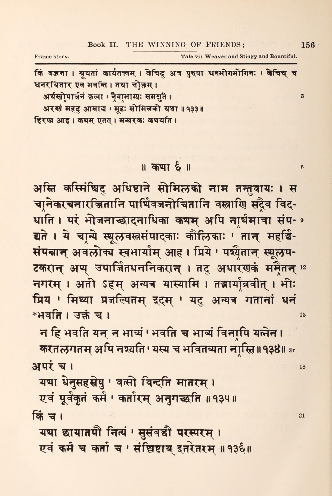Is flattened like a ball of clay.
![[f]](hertel2/n213.jpg){kind=link}
But why bore you? Here is the nub of duty. Certain men are born to enjoy the pleasures that money brings, certain others are born money’s guardians. There is a verse about it:
Your wealth will flee,
If fate decree,
Though it was fairly earned:
So silly Soft,
When perched aloft
In that great forest, learned.”
“How was that?” asked Gold. And Slow told the story of
Soft, the Weaver
In a certain town lived a weaver. His name was Soft, and he spent his time making garments dyed in various patterns, fit for such people as princes. But for all his labors, he could not collect a bit of money beyond food and clothes. Yet he saw other weavers, who made coarse fabrics, rolling in wealth, and he said to his wife: “Look at these fellows, my dear. They make coarse stuff, but they earn heaps of money. This city does not offer me a decent living. I am going to move.”
“Oh, my dear,” said his wife, “it is a mistake to say that money comes to those who travel. There is a proverb:
What shall not be, will never be; What shall be, follows painlessly: The thing your fingers grasp, will flit, If fate has predetermined it.
And again:
A calf can find its mother cow
Among a thousand kine:
So good or evil done, returns
And whispers: ‘I am thine.’
And once again:
As shade and sunlight interbreed,
[f]
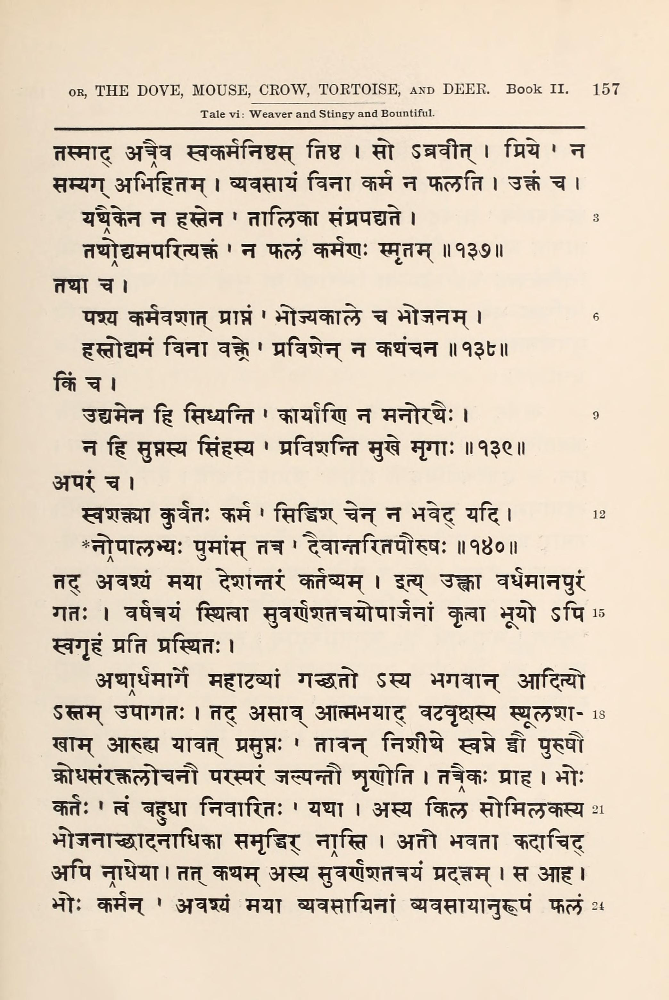So twined are Doer and his Deed.
![[f]](hertel2/n214.jpg){kind=link}
So stay here and mind your business.”
“You are mistaken, my dear,” said he. “No deed comes to fruition without effort. There is a proverb:
You cannot clap a single hand; Nor, effortless, do what you planned.
And again:
Although, at meal-time, fate provide
A richly loaded plate,
No food will reach the mouth, unless
The hand co-operate.
And once again:
Through work, not wishes, every plan
Its full fruition reaps:
No deer walk down the lion's throat
So long as lion sleeps.
And one last quotation:
Suppose he gave the best he had,
Yet no fruition came,
'Twas fate that blocked his efforts, not
The man who was to blame.
I must go to another country.” So he went to Growing City, stayed three years, and started home with savings of three hundred gold-pieces.
In mid-journey, he found himself in a great forest when the blessèd sun went to rest. So, forethoughtful for his safety, he climbed upon a stout branch of a banyan tree and dozed. In the middle of the night, as he slept, he saw two human figures whose eyes were bloodshot with fury, and heard them abusing each other.
The first of them was saying: “Come now, Doer! You know you have, in every possible way, prevented this fellow Soft from getting any capital beyond food and clothes. So you have no right ever to let him have any. Why did you give him three hundred gold-pieces?”
![[f]](hertel2/n215.jpg){kind=link}
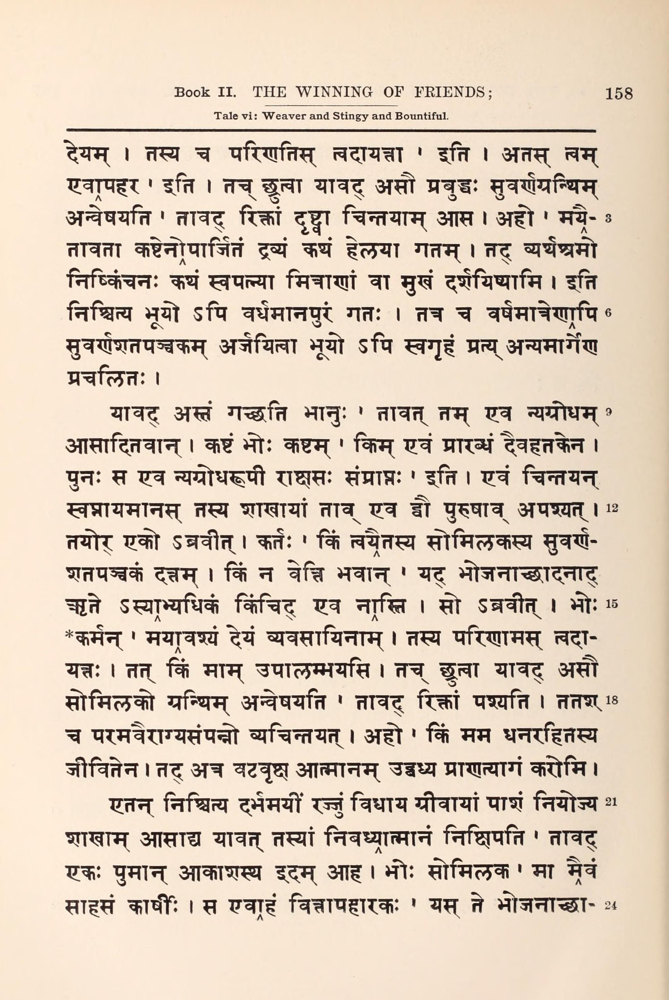
“Now, Deed!” said the other, “I am constrained to give the enterprising a reward in proportion to their enterprise. The final consequence is your affair. Take it from him yourself.” On hearing this, Soft awoke and looked for his bag of gold.
When he found it empty, he thought: “Oh, dear! It was so much trouble to earn the money, and it went in a flash. I have had my work for nothing. I haven’t a thing. How can I look my wife in the face, or my friends?” So he made up his mind to return to Growing City. There he earned five hundred gold-pieces in just one single year, and started home again by a different road.
When the sun went down, he came upon the very-same banyan tree, and he thought: “Oh, oh, oh! What is fate up to—damn the brute! Here is that same fiendish old banyan tree once more.” But he dozed off on a branch, and saw the same two figures.
One of them was saying: “Doer, why did you give this fellow Soft five hundred gold-pieces? Don’t you know that he doesn’t get a thing beyond food and clothes?”
“Friend Deed,” said the other, “I am constrained to give to the enterprising. The final consequence is your affair. So why blame me?”
When poor Soft heard this, he looked for his bag and found it empty. This plunged him into the depths of gloom, and he thought: “Oh, dear! What good is life to me if I lose my money? I will just hang myself from this banyan tree and say goodbye to life.”
Having made up his mind, he wove a rope of spear-grass,
adjusted it as a noose to his neck, climbed out a branch,
fastened it, and was about to let himself drop, when one of
the figures appeared in the sky and said: “Do not be so rash,
[f]
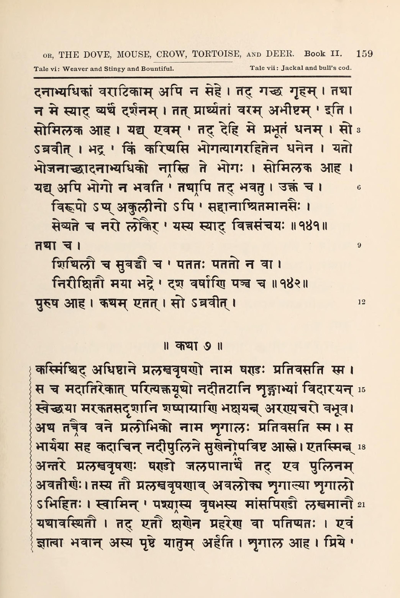 Friend Soft. I am the person who takes your money, who
does not allow you one cowrie beyond food and clothes. Now go
home. But, that you may not have seen me without result, ask
your heart’s desire.”
![[f]](hertel2/n216.jpg){kind=link}
“In that case,” said Soft, “give me plenty of money.” “My good fellow,” said the other, “what will you do with money which you cannot enjoy or give away? For you are to have no use of it beyond food and clothes.”
But Soft replied: “Even if I get no use of it, still I want it. You know the proverb:
The man of capital,
Though ugly and base-born,
Is honored by the world
For charity forlorn.
And again:
Loose they are, yet tight;
Fall, or stick, my dear?
I have watched them now
Till the fifteenth year.”
“How was that?” asked the figure. And Soft told the story of
Hang-Ball and Greedy
In a certain town lived a bull named Hang-Ball. From excess of male vigor he abandoned the herd, tore the river-banks with his horns, browsed at will on emerald-tipped grasses, and went wild in the forest.
In that forest lived a jackal named Greedy. One day he
sprawled at ease with his wife on a sandy river-bank. At that
moment the bull Hang-Ball came down to the same stretch of
sand for a drink. And the she-jackal said to her husband when
she saw the hanging testicles: “Look, my dear! See how two
lumps of flesh hang from that bull. They will fall in a
moment, or a few hours at most. So you must follow him,
[f]
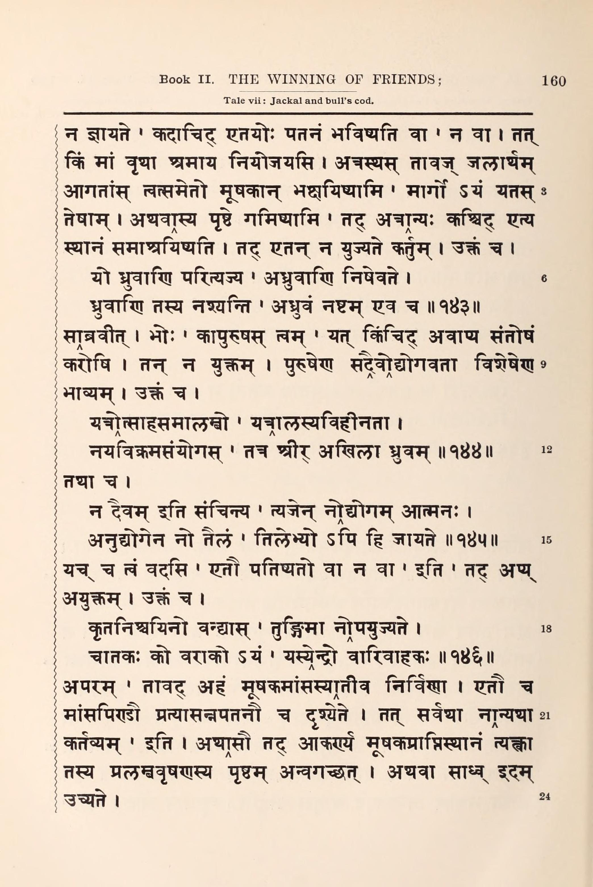 please.”
![[f]](hertel2/n217.jpg){kind=link}
“My dear,” said the jackal, “nobody knows. Perhaps they will fall some day, perhaps not. Why send me on a fool’s errand? I would rather stay here with you and eat the mice that come to water. They follow this trail. And if I should follow him, somebody else would come here and occupy the spot. Better not do it. You know the proverb:
If any leave a certain thing, For things uncertain wandering, The sure that was, is sure no more; What is not sure, was lost before.”
“Come,” said she, “you are a coward, satisfied with any little thing. You are quite wrong. We always ought to be energetic, a man especially. There is a saying:
Depend on energetic might, And banish indolence's blight, Let enterprise and prudence kiss— All luck is yours—it cannot miss.
And again:
Let none, content with fate's negation, Sink into lazy self-prostration: No oil of sesame, unless The seeds of sesame you press.
“And as for your saying: ‘Perhaps they will fall, perhaps not,’ that, too, is wrong. Remember the proverb:
Mere bulk is naught. The resolute
Have honor sure:
God brings the plover water. Who
Dare call him poor?
“Besides, I am dreadfully tired of mouse-flesh, and these two lumps of meat are plainly on the point of falling. You must not refuse me.”
So when he had listened to this, he left the spot where
mice were to be caught and followed Hang-Ball. Well, there is
[f]
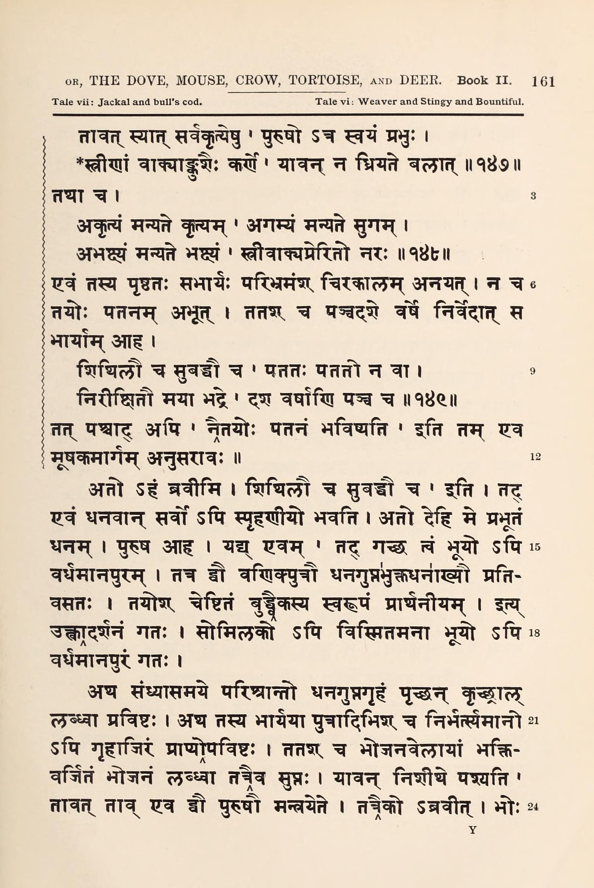 wisdom in the saying:
![[f]](hertel2/n218.jpg){kind=link}
Only while he does not hear Woman's whisper in his ear, Goading him against his will, Is a man his master still.
And again:
In action, should-not is as should,
In motion, cannot is as can,
In eating, ought-not is as ought,
When woman's whispers drive a man.
So he spent much time wandering with his wife after the bull. But they did not fall. At last in the fifteenth year, in utter gloom he said to his wife:
“Loose they are, yet tight;
Fall, or stick, my dear?
I have watched them now
Till the fifteenth year.
Let us draw the conclusion that they will not fall in the future either, and return to the old mouse-trail.”
“And that is why I say:
Loose they are, yet tight, ....
and the rest of it.
“Now anybody as rich as that becomes an object of desire. So give me plenty of money.”
“If things stand so,” said the figure, “go once more to Growing City. There dwell two sons of merchants; their names are Penny-Hide and Penny-Fling. When you have observed their conduct, you may ask for yourself the nature of one or the other.” With this he vanished, and Soft returned to Growing City, his mind in a maze.
At evening twilight, he wearily inquired for Penny-Hide’s residence, learned with some trouble where it was, and called there. In spite of scoldings from the wife, the children, and others, he made his way into the courtyard and sat down. Then at dinner-time he received food but no kind word, and went to sleep there.
During the night he saw the same two human figures holding
[f] council. One of them was saying: “Come now, Doer! Why
are you making extra expense for this fellow Penny-Hide, in
providing Soft with a meal?”
council. One of them was saying: “Come now, Doer! Why
are you making extra expense for this fellow Penny-Hide, in
providing Soft with a meal?”
And the second replied: “Friend Deed, it is no fault of mine. I am constrained to attend to acquisition and expenditure. But their final consequence is your affair.” Now when the poor fellow awoke, he had to fast because Penny-Hide was in the second day of a cholera attack.
So Soft left that house and went to Penny-Fling’s, who showed him much honor, greeting him cordially and providing food, garments, and the like. In his house Soft rested in a comfortable bed, and in the night he saw the same two figures taking counsel together. One of them was saying: “Come now, Doer! This fellow Penny-Fling is at no little expense today, entertaining Soft. So how will he pay that debt? He has drawn everything from the bank.” “Friend Deed,” said the second, “I had to do it. The final consequence is your affair.” Now at dawn a policeman came with money, a favor from the king, and gave it all to Penny-Fling.
When he saw this, Soft thought: “This Penny-Fling person, even without any capital, is a better kind of thing than that scaly old Penny-Hide. The proverb is right:
The Scriptures' fruit is pious homes; Right conduct, that of learnèd tomes; Wives fructify in joy and son; And money's fruit is gifts and fun.
“So may the blessèd Lord of All make me a person whose money goes in gifts and fun. I see no good in Penny-Hiding.”
So the Lord of All took him at his word, making him that kind of person.
![[f]](hertel2/n220.jpg){kind=link}
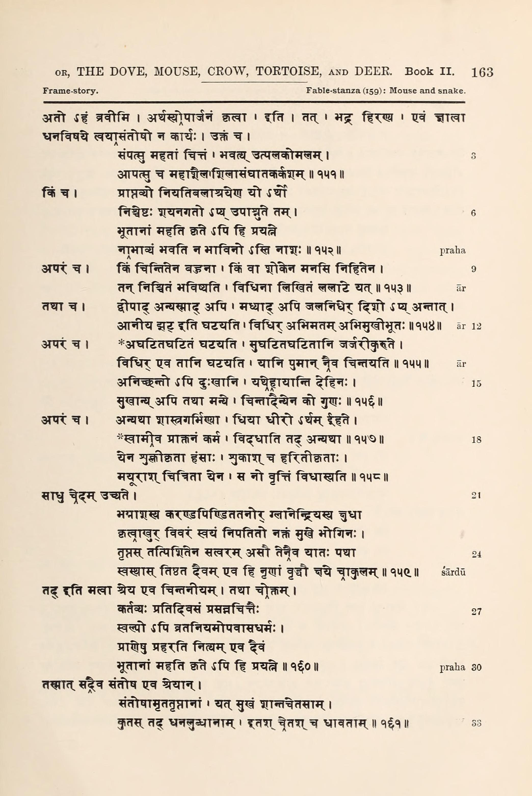
“And that is why I say:
Your wealth will flee, If fate decree, ....
and the rest of it. Therefore, my dear friend Gold, recognize the facts and feel no uneasiness in the department of finance. You know the proverb:
A lofty soul, in days of power, Is tender as a lotus-flower; But, meeting misadventure's shock, Grows hard as Himalayan rock.
And again:
The goal desiderating powers at strain, Is reached by listless sleepers with no pain: Though panting life go struggling ceaselessly, The to-be is, is not the not-to-be.
And once again:
Why think and think without relief? Why weight the mind with aimless grief? All finds fulfilment, soon or late, If written on the brow by fate.
Or put it this way:
From distant island, central sea, Or far horizon's brink, Fate brings and links its wilful whims, Before a man can wink.
Or this way:
Fate links the unlinked, unlinks links;
It links the things that no man thinks.
All life, unwilling, faces its
Unbidden doom—
Some ill, no doubt, but blessings, too—
Why sink in gloom?
And yet again:
Courageous, cultivated minds
Their fate would supervise;
But linked causation masters them,
And makes it otherwise.
And He who made the parrots green,
But made the king-swans white,
And peacocks particolored, He
Will order us aright.
There is great wisdom in the old story:
Within a basket tucked away In slow starvation's grim decay, A broken-hearted serpent lay. But see the cheerful mouse that gnaws A hole, and tumbles in his jaws At night—new hope's unbidden cause! Now see the serpent, sleek with meat, Who hastens through the hole, to beat From quarters cramped, a glad retreat! So fuss and worry will not do; For fate is somehow muddling through To good or bad for me and you.
“Adopt this point of view, and give some attention to ultimate salvation. There is a verse about that, too:
Let some small rite—vow, fasting, self-control— Be daily practiced with a quiet soul; For fate chips daily from our days to be, Though panting life go struggling ceaselessly.
“This being so, contentment is always wise:
Contentment's nectar-draught supplies
The quiet joy that satisfies;
How can the money-maddened know
[f]
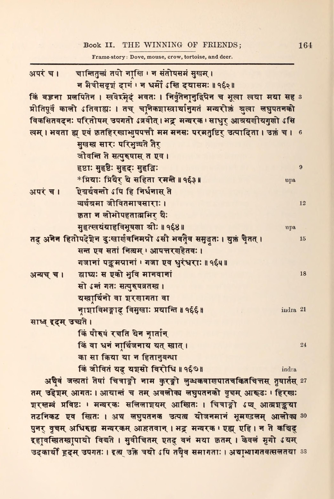That joy in bustlings to and fro?
![[f]](hertel2/n221.jpg){kind=link}
And once again:
No penance like forbearance;
No pleasure like content;
No friend like gifts; no virtue
Like hearts on mercy bent.
“But why bore you with a sermon? In this place you are at home. Pray divest yourself of disturbing worries, and spend your time in friendship with me.”
Now when Swift had listened to these observations of Slow, set off as they were with the inner truth of numerous authoritative works, his face blossomed, his heart was satisfied, and he said: “Slow, my dear fellow, you are good. Your virtue is something to rely on. For in the act of offering this comfort to Gold, you have brought perfect satisfaction to my heart. As the proverb puts it:
They taste the best of bliss, are good,
And find life's truest ends,
Who, glad and gladdening, rejoice
In love, with loving friends.
And again:
The richest man is penniless, A living naught, a vain distress, If greed, true wealth destroying, bends His soul to lack the charm of friends.
“Now by means of this first-class advice you have rescued our poor friend, sunk in the sea of wretchedness. After all, it is quite in the nature of things:
The good forever save the good,
When dull misfortunes clog:
For only elephants can drag
Their comrades from the bog.
And again:
No man deserves the praise of men, Nor meets the vow of virtue, when The poor or suppliant from him go Averted, sunk in hopeless woe.
Yes, there is wisdom in this:
What manhood is there, making not
The sad, secure?
What wealth is that, availing not
To aid the poor?
What sort of act, performed without
Good consequence?
What kind of life, that glory feels
To be offense?”
While they were conversing thus, a deer named Spot arrived, panting with thirst and quivering for fear of hunters’ arrows. On seeing him approach, Swift flew into a tree, Gold crept into a grass-clump, and Slow sought an asylum in the water. But Spot stood near the bank, trembling for his safety.
Then Swift flew into the air, inspected the terrain for
the distance of a league, then settled on his tree again, and
called to Slow: “Slow, my dear fellow, come out, come out! No
evil threatens you here. I have inspected the forest
minutely. There is only this deer who has come to the lake
[f]
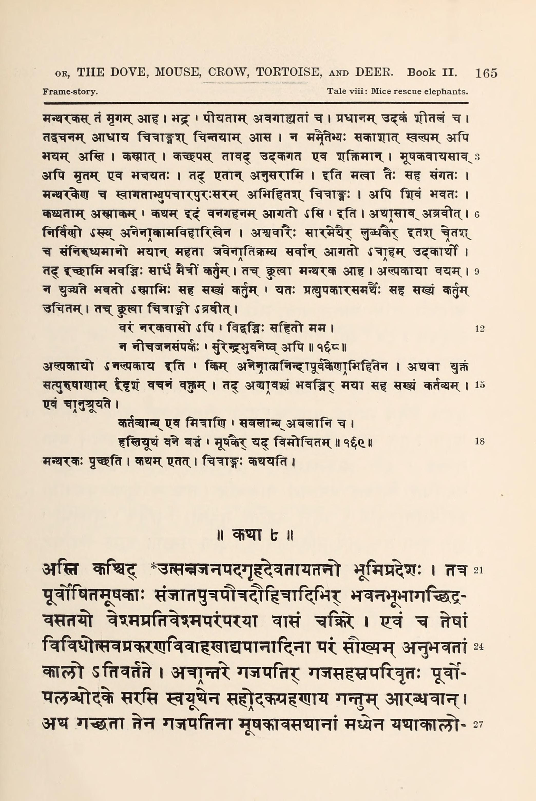 for water.” Thereupon all three gathered as before.
![[f]](hertel2/n222.jpg){kind=link}
Then, out of friendly feeling toward a guest, Slow said to the deer: “My good fellow, drink and bathe. Our water is of excellent quality, and cool.” And Spot thought, after meditating on this invitation: “Not the slightest danger threatens me from these. And this because a turtle has no capacity for mischief when out of water, while mouse and crow feed only on what is dead. So I will make one of their company.” And he joined them.
Then Slow bade him welcome and did the honors, saying: “I trust your circumstances are happy. Pray tell us how you happened into this neck of the woods.” And Spot replied: “I am weary of a life without love. I have been hard pressed on every side by mounted grooms and dogs and hunters. But fear lent speed, I left them all behind, and came here to drink. Now I am desirous of your friendship.”
Upon hearing this, Slow said: “We are little of body. It is unnatural for you to make friends with us. One should make friends with those capable of returning favors.” But Spot rejoined:
“Better with the learned dwell, Even though it be in hell Than with vulgar spirits roam Palaces that gods call home.
“And since you know that one little of body may be of no little consequence, why these self-depreciatory remarks? Yet after all, such speech is becoming to the excellent. I therefore insist that you make friends with me today. There is a good old saying:
Make friends, make friends, however strong
Or weak they be:
Recall the captive elephants
That mice set free.”
“How was that?” asked Slow. And Spot told the story of
The Mice That Set Elephants Free
There was once a region where people, houses, and temples had fallen into decay. So the mice, who were old settlers there, occupied the chinks in the floors of stately dwellings with sons, grandsons (both in the male and female line), and further descendants as they were born, until their holes formed a dense tangle. They found uncommon happiness in a variety of festivals, dramatic performances (with plots of their own invention), wedding-feasts, eating-parties, drinking-bouts, and similar diversions. And so the time passed.
But into this scene burst an elephant-king, whose retinue
numbered thousands. He, with his herd, had started for the
lake upon information that there was water there. As he
[f]
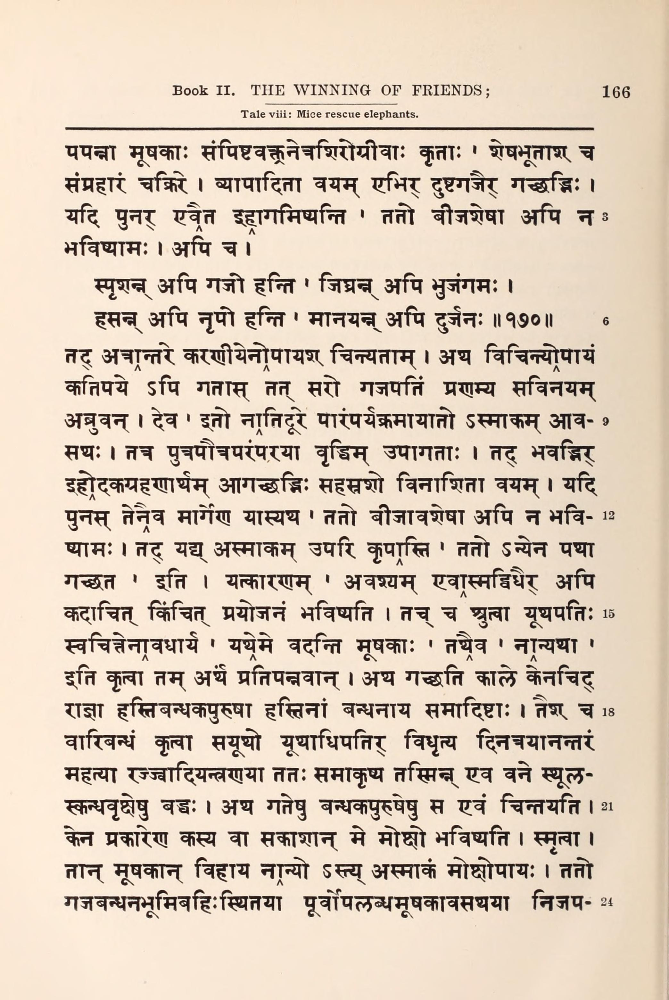 marched through the mouse community, he crushed faces,
eyes, heads, and necks of such mice as he encountered.
![[f]](hertel2/n223.jpg){kind=link}
Then the survivors held a convention. “We are being killed,” they said, “by these lumbering elephants—curse them! If they come this way again, there will not be mice enough for seed. Besides:
An elephant will kill you, if He touch; a serpent if he sniff; King's laughter has a deadly sting; A rascal kills by honoring.
Therefore let us devise a remedy effective in this crisis.”
When they had done so, a certain number went to the lake, bowed before the elephant-king, and said respectfully: “O King, not far from here is our community, inherited from a long line of ancestors. There we have prospered through a long succession of sons and grandsons. Now you gentlemen, while coming here to water, have destroyed us by the thousand. Furthermore, if you travel that way again, there will not be enough of us for seed. If then you feel compassion toward us, pray travel another path. Consider the fact that even creatures of our size will some day prove of some service.”
And the elephant-king turned over in his mind what he had heard, decided that the statement of the mice was entirely logical, and granted their request.
Now in the course of time a certain king commanded his elephant-trappers to trap elephants. And they constructed a so-called water-trap, caught the king with his herd, three days later dragged him out with a great tackle made of ropes and things, and tied him to stout trees in that very bit of forest.
When the trappers had gone, the elephant-king reflected
thus: “In what manner, or through whose assistance, shall I
be delivered?” Then it occurred to him: “We have no means of
[f]
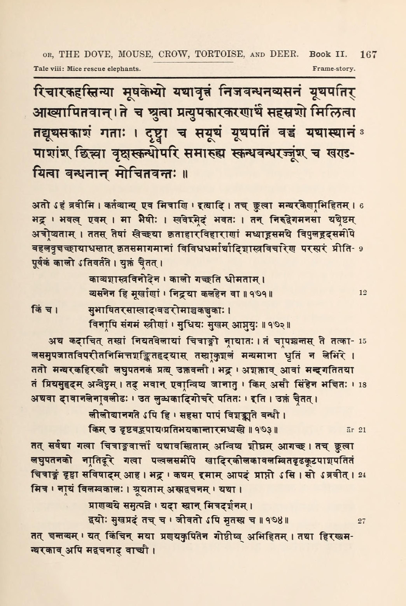 deliverance except those mice.”
![[f]](hertel2/n224.jpg){kind=link}
So the king sent the mice an exact description of his disastrous position in the trap through one of his personal retinue, an elephant-cow who had not ventured into the trap, and who had previous information of the mouse community.
When the mice learned the matter, they gathered by the thousand, eager to return the favor shown them, and visited the elephant herd. And seeing king and herd fettered, they gnawed the guy-ropes where they stood, then swarmed up the branches, and by cutting the ropes aloft, set their friends free.
“And that is why I say:
Make friends, make friends, however strong, ....
and the rest of it.”
When Slow had listened to this, he said: “Be it even so, my dear fellow. Have no fear. In this place you are at home. Pray dismiss anxieties and behave as in your own dwelling.” So they all took food and recreation at such hours as suited each, met at the noon hour in the shade of crowding trees beside the broad lake, and spent their time in reciprocated friendship, discussing a variety of masterly works on religion, economics, and similar subjects. And this seems quite natural:
For men of sense, good poetry
And science will suffice:
The time of dunderheads is spent
In squabbling, sleep, and vice.
And again:
A thrill
Will fill
The wisest heart,
When flow
Bons mots
Composed with art,
Though fe-
Males be
Removed apart.
Now one day Spot failed to appear at the regular hour. And the others, missing him, alarmed also by an evil omen that appeared at that moment, drew the conclusion that he was in trouble, and could not keep up their spirits. Then Slow and Gold said to Swift: “Dear fellow, we two are prevented by locomotive limitations from hunting for our dear friend. We beg you, therefore, to hunt about and learn whether the poor fellow is eaten by a lion, or singed by forest fire, or fallen into the power of hunters and such creatures. There is a saying:
One quickly fears for loved ones who
In pleasure-gardens play:
What, then, if they in forests grim
And peril-bristling stay?
By all means go, search out precise news concerning Spot, and return quickly.”
On hearing this, Swift flew a little distance to the edge of a swamp, and finding Spot caught in a stout trap braced with pegs of acacia-wood, he sorrowfully said: “My dear friend, how did you fall into this distress?” “My friend,” said Spot, “there is no time for delay. Listen to me.
When life is near an end, The presence of a friend Brings happiness, allying The living with the dying.
Oh, pardon any expressions of friendly impatience I may
have used in our discussions. Likewise, say to Gold and Slow
[f]
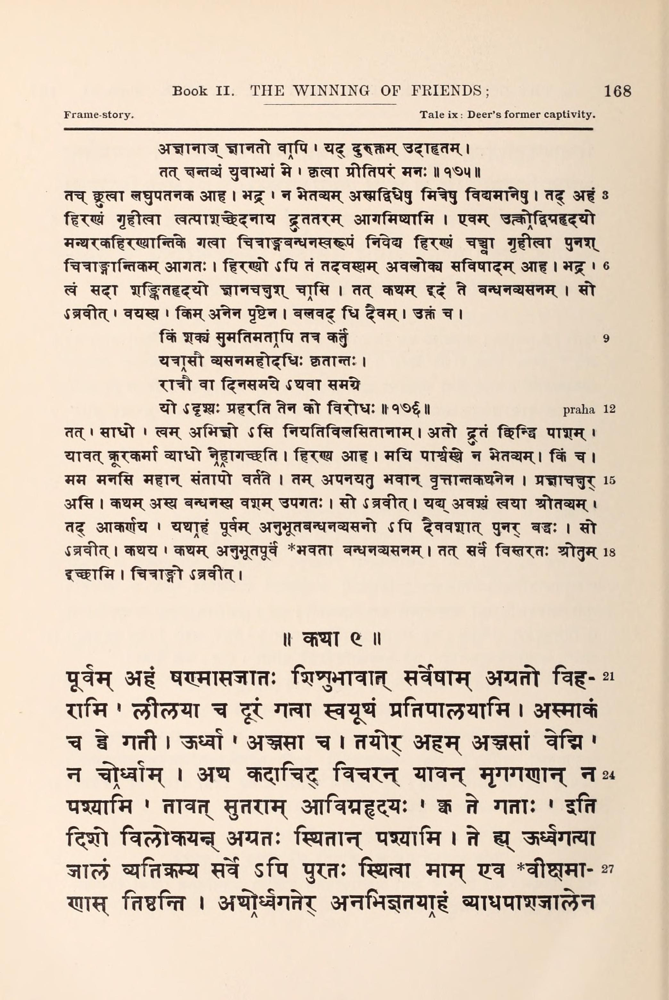 in my name:
![[f]](hertel2/n225.jpg){kind=link}
If any ugly word Was willy-nilly heard, I pray you both, forgive— Let only friendship live.”
On hearing this, Swift replied: “Feel no fear, my dear fellow, while you have friends like us. I will return with all speed, bringing Gold to cut your bonds.”
Thereupon, with his heart in a flutter, he found Slow and Gold, explained the nature of Spot’s captivity, then returned to Spot, carrying Gold in his beak. Gold, for his part, on seeing the plight of his friend, sorrowfully said: “My dear fellow, you always had a wary mind and a shrewd eye. How, then, did you fall into this dreadful captivity?”
And Spot rejoined: “Why ask, my friend? Fate, you know, does what it will. As the saying goes:
What mortal flies
(However wise)
When billows rise
To fatal size
On seas of woe?
In dead of night,
Or broad daylight,
Grim fate may smite;
Ah, who can fight
An unseen foe?
You, my saintly friend, are familiar with the caprices of constraining destiny. Therefore be quick. Cut my bonds before the pitiless hunter comes.”
“Have no fear,” said Gold, “while I am at your side. In my heart, however, is great sorrow, which I beg you to remove by telling your story. You are guided by an eye of wisdom. How did you fall into this captivity?”
“Well,” said Spot, “if you insist on knowing, listen, and learn how I have been made captive a second time, having once before suffered the woes of captivity.”
“Tell me,” said Gold, “how once before you suffered the woes of captivity. I am eager to learn the full detail.” And Spot told the story of
Spot’s Captivity
Long ago, when I was six months old, I used to gambol in front of all the rest, as a youngster does. Out of sheer spirits I would run far ahead, then wait for the herd. Now we deer have two gaits, called the Jump-Up and the Straightaway. Of these I knew the Straightaway, but not the Jump-Up.
While amusing myself one day, I lost touch with the herd.
At this I was dreadfully worried, gazed about the horizon to
learn where they might be, and discovered them ahead. Now
they had avoided a snare by means of the Jump-Up; they stood
[f]
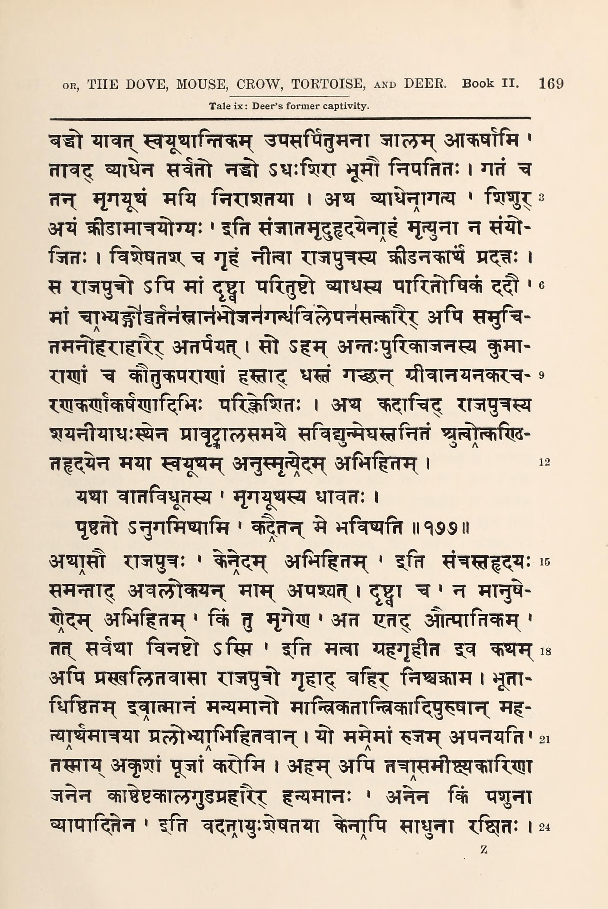 in a body ahead of me, and waited, all looking at me.
But I, ignorant of the Jump-Up, was caught in the hunter’s
snare.
![[f]](hertel2/n226.jpg){kind=link}
While I was trying to drag it toward the herd, the hunter bound all my limbs and I fell to the ground, head foremost. And the herd of deer vanished, seeing no hope of saving me.
When the hunter came up, he did not put me to death, for pity softened his heart at the thought: “He is a fawn, fit only for a pet.” Instead, he carefully took me home and gave me as a plaything to a prince, who showed his delight at seeing me by giving the hunter a generous reward.
The prince treated me kindly, providing ointments, massage, baths, food, perfumes, and salves, while my meals were appropriate and palatable. But as I was passed from hand to hand by the curious women and princes at court, I was seriously inconvenienced by petting and scratching, which did not spare neck, eye, front hoof, hind hoof, or ear. Finally, one day in the rainy season, as the prince reclined on a couch, I observed the lightning, listened to the thunder, and, my heart wistful for my fondly remembered herd, I recited:
Where shall I follow on the herd
Of coursing deer again?
When brace myself against the wind
That whistles by? Ah, when?
“Who said that?” cried the prince, and looked about him, terrified. When he saw me, he thought: “No man said it, but a deer. It is a prodigy. I am undone,” and like one possessed by a devil, he tottered from the house, his garments in disarray.
Thinking himself ridden by a demon, he tempted the sorcerers and magicians with a great reward, saying: “If any free me from this torment, I will pay him no small honor.”
Meanwhile, overhasty individuals were striking me with
sticks, bricks, and cudgels, but—further life being
predestined—I was rescued by a certain holy man who said:
[f]
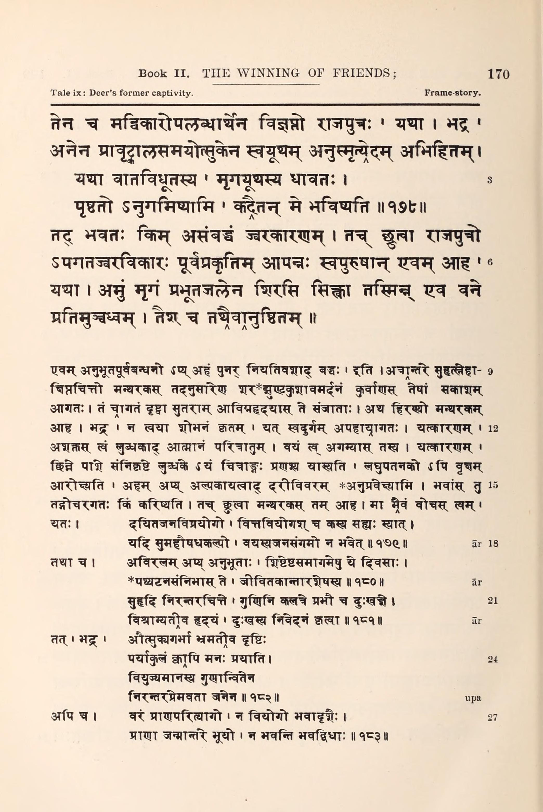 “Why kill the poor beast?” Furthermore, he penetrated
the cause of my malady, and respectfully said to the prince:
“Dear sir, in the rainy season he wistfully remembered his
native herd, and therefore recited:
![[f]](hertel2/n227.jpg){kind=link}
Where shall I follow on the herd
Of coursing deer again?
When brace myself against the wind
That whistles by? Ah, when?”
On hearing this, the prince was cured of his feverish malady, returned to his normal state, and said to his men: “Douse the poor deer’s head in plenty of water, and set him free in the forest he came from.” And they did so.
“Thus, though having suffered a previous captivity, I am caught again through constraining destiny.”
At this moment Slow joined them. For his heart was so full of love for his friend that he had followed, leaving grass, shrubs, and spear-grass crushed behind him. At sight of him, they were more distressed than ever, and Gold became their spokesman. “My dear fellow,” said he, “you have done wrong in leaving your fortress to come here, since you are not able to save yourself from the hunter, while on us he cannot lay hands. For when the bonds are cut and the hunter stands near, Spot will bound away and disappear, Swift will fly into a tree, while I, being a little fellow, will find some chink to slide into. But what will you do, when within his reach?”
To this Slow listened, but he said: “Oh, do not blame me, you of all people. For
The loss of love and loss of wealth
Who could endure
But for restoratives of health
In friendship sure?
And again:
The days when meetings do not fail
With wise and good
Are lovely clearings on the trail
Through life's wild wood.
The heart finds rest in telling things
(When troubles toss)
To honest wife, or friend who clings,
Or kindly boss.
Ah, my dear fellow,
The wistful glances wander, The wits, bewildered, ponder In good men separated, Whose love is unabated.
And more than that:
Better lose your life than friends; Life returns when this life ends, Not the sympathy that blends.”
![[f]](hertel2/n228.jpg){kind=link}
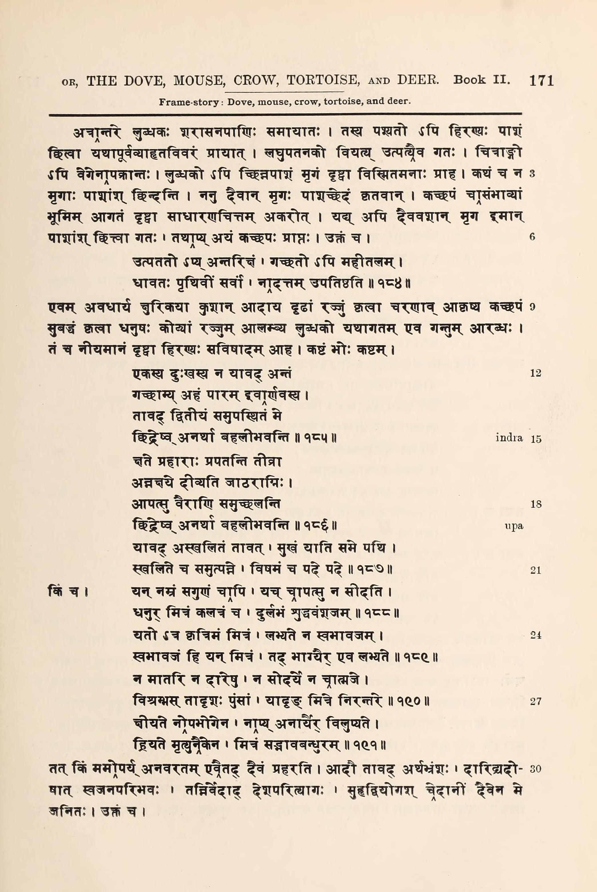
At this moment the hunter arrived, bow and arrow in hand. Under his very eyes Gold cut the bonds and slipped into the before-mentioned chink. Swift flew into the air and was gone. Spot darted away.
Now when the hunter saw that the deer’s bonds had been cut, he was filled with amazement and said: “Under no circumstances do deer cut their own bonds. It was through fate that a deer has done it.” Then he spied a turtle on most improbable terrain, and with mixed feelings he said: “Even if the deer, with fate’s help, cut his bonds and escaped, still I’ve got this turtle. As the saying goes:
Nothing comes, of all that walks,
All that flies to heaven,
All that courses o'er the earth,
If it be not given.”
After this meditation, the hunter cut spear-grass with his knife, wove a stout rope, tied the turtle’s feet tightly together, fastened the rope to his bow-tip, and started home. But when Gold saw his friend borne away, he sorrowfully said: “Ah, me! Ah, me!
No sooner sorrow's ocean-shore
I reach in safety, than once more
A bitter sorrow is my lot:
Misfortunes crowd the weakest spot.
Fresh blows are dreadful on a wound;
Food fails, and hunger-pangs abound;
Woes come, old enmities grow hot:
Misfortunes crowd the weakest spot.
One walks at ease on level ground
Till one begins to stumble;
Let stumbling start, and every step
Is apt to bring a tumble.
And besides:
'Tis hard to find in life A friend, a bow, a wife, Strong, supple to endure, In stock and sinew pure, In time of danger sure. False friends are common. Yes, but where True nature links a friendly pair, The blessing is as rich as rare. To bitter ends You trust true friends, Not wife nor mother, Not son nor brother. No long experience alloys True friendship's sweet and supple joys; No evil men can steal the treasure; 'Tis death, death only, sets a measure.
“Ah, what is this fate that smites me ceaselessly? First came the loss of property; then humiliations from my own people, the result of poverty; because of gloom thereat, exile; and now fate prepares for me the loss of a friend. As the proverb says:
[f]
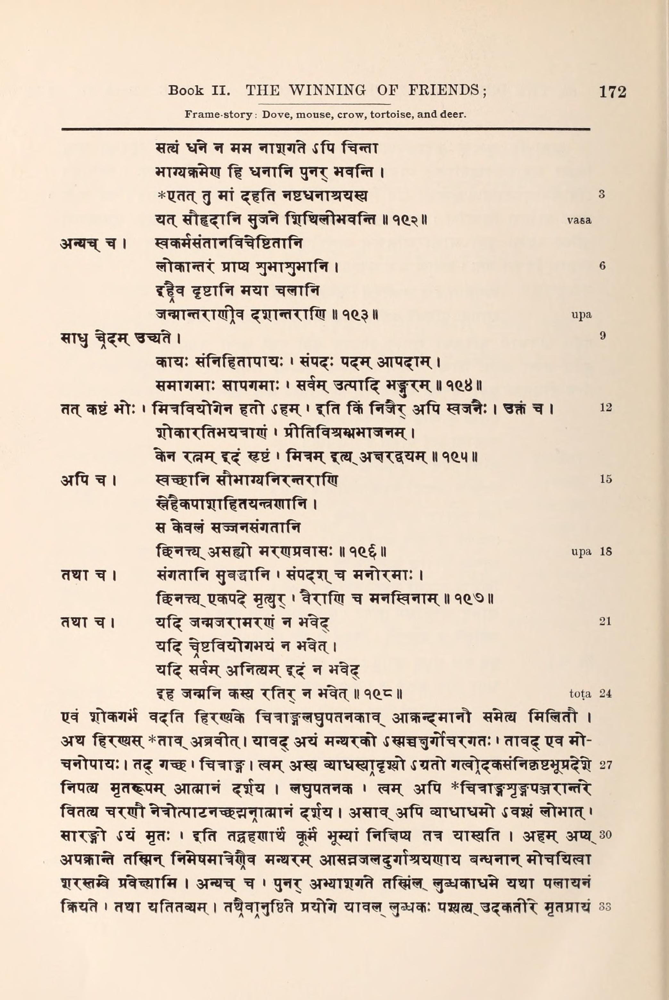In truth, I do not grieve though riches flee;
Some lucky chance will bring them back to me:
'Tis this that hurts me—lacking riches' stay,
The best of friends relax and fall away.
![[f]](hertel2/n229.jpg){kind=link}
And again:
Fate's artful linkage since my birth Of evil deeds and deeds of worth Pursues me on this present earth Till states of mind that play and sway And change and range from day to day, Seem lives that strive and pass away.
Ah, there is only too much wisdom in this:
The body, born, is near its doom; And riches are the source of gloom; All meetings end in partings: yes, The world is all one brittleness.
“Ah, me! Ah, me! The loss of my friend is death to me. What care I even for my own people? As the saying goes:
A foe of woe and pain and fear, A cup of trust and feelings dear, A pearl—who made it? Who could blend Six letters in that name of friend?
Oh, friendly meetings!
O joy to which the righteous cling, Machine that answers love's sole string, Pure happiness in every breath, Cut short by one stern exile—Death!
And once again:
Pleasant riches; friendship's course
In familiar ruts;
Enmities of men of sense—
Death abruptly cuts.
And one last word:
If birth and death did not exist Nor age nor fear of loved ones missed, If all were not so quick to perish, Whose life were not a thing to cherish?”
While Gold recited these grief-stricken sentences, Spot and Swift joined him and united their lamentations with his. And Gold said to them: “So long as our dear Slow is within sight, so long we have a chance to save him. Leave us, Spot. You must slip past the hunter unobserved, drop to earth somewhere near water, and pretend to be dead. Swift, you must spread your claws in the cagework of Spot’s horns, and pretend to peck out his eyes. Then that dreadful beast of a hunter, in the greedy belief that he has found a dead deer, will certainly wish to seize him, will throw the turtle on the ground, and hurry up. When his back is turned, I for my part will in a mere twinkling set Slow free to seek refuge in the water near by, his natural fortress. I myself will slide into a grass-clump. You, furthermore, must plan a second escape when the beast of a hunter is upon you.” So they put this plan into practice.
![[f]](hertel2/n230.jpg){kind=link}
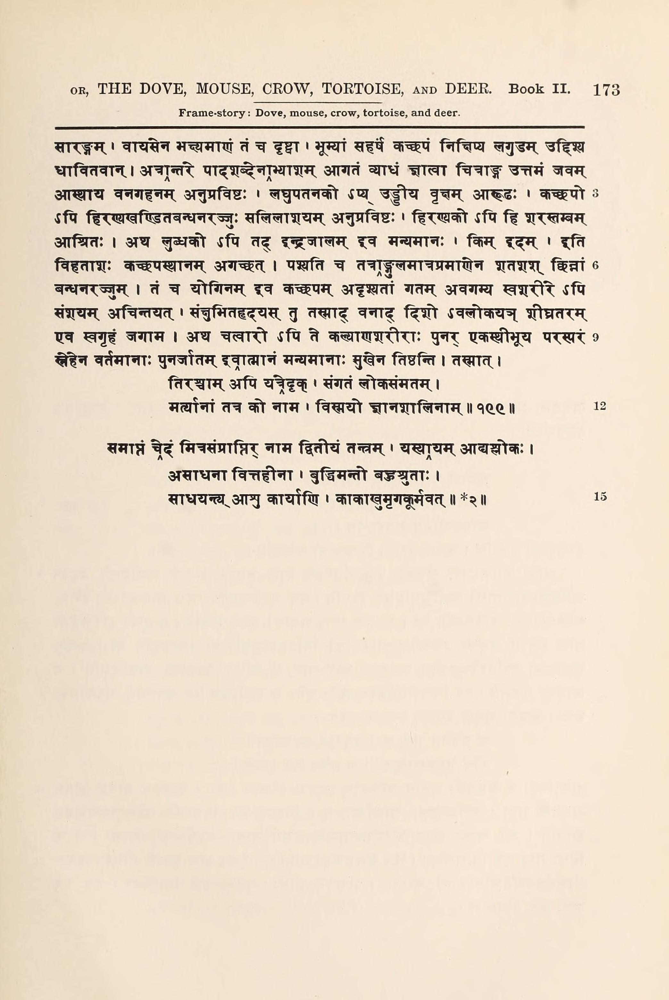
Now when the hunter saw a deer as good as dead beside the water, and noticed that a crow was pecking at him, he joyfully threw the turtle on the ground, and ran for a club. As soon as Spot could tell from the tramp of feet that the hunter was close upon him, with a supreme burst of speed he swept into dense forest. Swift flew into a tree. The turtle, his fettering cord cut by Gold, scrambled to shelter in the water. Gold slipped into a grass-clump.
To the hunter it seemed a conjurer’s trick. “What does it mean?” he cried in his disappointment. Then he returned to the spot where he had left the turtle, and saw the cord cut in a hundred pieces no longer than a finger’s breadth. Then he perceived that the turtle had vanished like a magician, and anticipated danger for his own person. With troubled heart he made all speed out of the wood for home, casting anxious glances at the horizon.
Meanwhile the four friends, free of all injury, came together, expressed their mutual affection, took a new lease on life, and lived happily. And so
If beasts enjoy so great a prize Of friendship, why should wonder rise In men, who are so very wise?
Here ends Book II, called “The Winning of Friends.” The first verse runs:
The deer and turtle, mouse and crow Had first-rate sense and learning; so, Though money failed and means were few, They quickly put their purpose through.